La première porte d’entrée pour identifier des amendements spatiaux est constituée par les textes légaux recensés dans CNLEGIS. Certains types de décisions, en particulier celles qualifiées de modifiant, peuvent signaler une modification des limites ou du statut spatial d’une aire protégée.
Dans cette section, nous identifions les décisions légales qui mentionnent explicitement une modification, et les aires protégées concernées.
Nous identifions ainsi 25 aires protégées pour lesquelles au moins une décision légale mentionne explicitement une modification.
Pour chaque décision légale identifiée comme potentiellement modificative, nous adoptons la logique suivante. Nous utilisons l’application interactive (Shiny) disponible dans le chapitre Chapter 6. Nous observons la date et le contenu des décisions qui la concernent. Si les textes légaux indiquent bien une modification de périmètre, on passe en revue les données disponibles, afin d’identifier la source la plus crédible qui représente le périmètre précédent.
Code
tmap_mode("plot")all_PAs_conso <-read_rds("data/id/all_PAs_conso.rds")resolve_wdpaid <-function(wdpa_name_or_id, decisions) {# English: accept WDPAID (numeric) or WDPA_NAME (character) and return a single WDPAIDif (is.numeric(wdpa_name_or_id)) {return(wdpa_name_or_id[1]) } wdpaid <- decisions |>filter(WDPA_NAME == wdpa_name_or_id) |>pull(WDPAID) |>first()if (is.na(wdpaid)) {stop("WDPAID introuvable pour: ", wdpa_name_or_id) } wdpaid}show_cnlegis_for_pa <-function(wdpa_name_or_id, decisions, pattern =NULL) {# English: show all CNLEGIS decisions for a PA, optionally filter by a pattern on type_decision wdpaid <-resolve_wdpaid(wdpa_name_or_id, decisions) out <- decisions |>filter(WDPAID == wdpaid) |>select( WDPA_NAME, WDPAID, date_texte, type_texte, num_texte, type_decision, id_texte, objet_texte, cnlegis_url ) |>arrange(date_texte)if (!is.null(pattern)) { out <- out |>filter(str_detect(type_decision, pattern)) } out}plot_pa_sources <-function( wdpa_name,data = all_PAs_conso,decisions = pa_decisions,wdpa_historical_path ="data/MDG_WDPA_Consolidated.parquet",sources =NULL) {# Check if input is a WDPAID (integer) or name (string)if (is.numeric(wdpa_name)) { wdpaid <- wdpa_name } else {# Look up the WDPAID from pa_decisions wdpaid <- decisions |>filter(WDPA_NAME == wdpa_name) |>pull(WDPAID) |>first()# Check if WDPAID was foundif (is.na(wdpaid)) {message("No WDPAID found in pa_decisions for: ", wdpa_name)return(NULL) } }# Filter all observations matching this WDPAID from all_PAs_conso pa_subset <- data |>filter(WDPAID == wdpaid)# Load and filter WDPA historical data wdpa_historical <-read_parquet(wdpa_historical_path) |>mutate(geometry =st_as_sfc(geometry)) |>st_as_sf() |>filter(WDPAID == wdpaid) |>mutate(dataset_id =paste0("WDPA_", data_year)) |>st_transform(st_crs(pa_subset))# Combine both datasets pa_subset <-bind_rows(pa_subset, wdpa_historical)# Filter by specified sources if providedif (!is.null(sources) &&length(sources) >0) { pa_subset <- pa_subset |>filter(dataset_id %in% sources) |># Convert to factor with levels in the order specified by sourcesmutate(dataset_id =factor(dataset_id, levels = sources)) }# Check if any results foundif (nrow(pa_subset) ==0) {message("No protected area found with WDPAID: ", wdpaid)return(NULL) }# Get summary information n_obs <-nrow(pa_subset) datasets <-unique(pa_subset$dataset_id)# Print summarycat("\n=== ", wdpa_name, " ===\n")cat("WDPAID:", wdpaid, "\n")cat("Number of representations:", n_obs, "\n")cat("Datasets:", paste(datasets, collapse =", "), "\n\n")# Create static plot map with all geometries in one layer (tmap v4 syntax)tmap_mode("plot") map <-tm_shape(pa_subset) +tm_polygons(fill ="dataset_id",fill_alpha =0.5,col ="black",lwd =1,fill.scale =tm_scale(values ="brewer.set2"),fill.legend =tm_legend(title ="Data Source",position =tm_pos_out("right") ) ) +tm_title(wdpa_name)return(map)}# Add a spatial amendment to SAT based on a legal decision## This function creates a SAT entry documenting a historical boundary or# internal zone that differs from the current WDPA representation. It links# a geometry from curated spatial sources to a legal decision that marks# when this geometry ceased to be valid.## Parameters:# sat: Existing SAT table (sf object) or NULL to initialize# data: Consolidated spatial dataset (e.g., all_PAs_conso) containing# multiple representations of PAs from different sources# decisions: Legal decisions table with WDPAID linkage (e.g., pa_decisions)# wdpa_name_or_id: Either WDPAID (numeric) or WDPA_NAME (character)# decision_filter: Named list to identify the legal decision, can include:# - year: numeric year of decision# - type_decision_pattern: regex pattern for type_decision# - num_texte: exact legal instrument number# - id_texte: exact decision ID# source_dataset_id: The dataset_id in 'data' containing the historical geometry# amendment_type: Type of spatial amendment. Allowed values:# - "boundary_modification": Legal change to external boundaries# - "internal_zoning": Addition/modification of internal zones# - "correction": Data correction (wrong geometry in WDPA)# valid_from: Optional start date (Date or character). If NULL, remains NA# confidence: Confidence level ("high", "medium", "low")# verification_method: Method used to verify the geometry# verified_by: Who performed verification# notes: Optional notes (defaults to decision object text)## Returns:# Updated SAT table (sf object) with new amendment(s) appendedadd_modif_sat <-function( sat, data, decisions, wdpa_name_or_id,decision_filter =NULL,manual_decision =NULL, source_dataset_id,amendment_type ="boundary_modification",valid_from =NULL,confidence ="medium",verification_method ="visual_verification_shiny",verified_by ="project_team",notes =NULL) {# Helper: accept WDPAID (numeric) or WDPA_NAME (character) and return a single WDPAID resolve_wdpaid <-function(wdpa_name_or_id, decisions) {if (is.numeric(wdpa_name_or_id)) {return(wdpa_name_or_id[1]) } wdpaid <- decisions |>filter(WDPA_NAME == wdpa_name_or_id) |>pull(WDPAID) |>first()if (is.na(wdpaid)) {stop("WDPAID introuvable pour: ", wdpa_name_or_id) } wdpaid }# Validate amendment_type for SAT allowed_types_sat <-c("boundary_modification","internal_zoning","correction" )if (!amendment_type %in% allowed_types_sat) {stop("amendment_type must be one of: ",paste(allowed_types_sat, collapse =", "),". Got: ", amendment_type ) } wdpaid <-resolve_wdpaid(wdpa_name_or_id, decisions)# Use manual_decision if provided, otherwise search CNLEGIS databaseif (!is.null(manual_decision)) {# Manual decision provided - use it directly dec <-tibble(date_texte = manual_decision$date_texte,type_texte = manual_decision$type_texte,num_texte = manual_decision$num_texte,id_texte =if (!is.null(manual_decision$id_texte)) { manual_decision$id_texte } else {NA_character_ },objet_texte = manual_decision$objet_texte,cnlegis_url =NA_character_ ) } else {# Search CNLEGIS database with filtersif (!is.list(decision_filter)) {stop("decision_filter doit être une liste ou NULL si manual_decision est fourni." ) }# Select exactly one legal decision based on filters dec <- decisions |>filter(WDPAID == wdpaid)if (!is.null(decision_filter$year)) { dec <- dec |>filter(lubridate::year(date_texte) == decision_filter$year) }if (!is.null(decision_filter$type_decision_pattern)) { dec <- dec |>filter(str_detect(type_decision, decision_filter$type_decision_pattern)) }if (!is.null(decision_filter$num_texte)) { dec <- dec |>filter(num_texte == decision_filter$num_texte) }if (!is.null(decision_filter$id_texte)) { dec <- dec |>filter(id_texte == decision_filter$id_texte) } dec <- dec |>arrange(date_texte)if (nrow(dec) ==0) {stop("Aucune décision CNLEGIS ne correspond au filtre pour WDPAID=", wdpaid ) }if (nrow(dec) >1) {stop("Filtre CNLEGIS ambigu: plusieurs décisions correspondent. Raffiner decision_filter." ) } }# Extract historical geometry from consolidated spatial data geom_before <- data |>filter(WDPAID == wdpaid, dataset_id == source_dataset_id) |>filter(dataset_id !="CNLEGIS_2024") |>st_zm(drop =TRUE, what ="ZM") |>st_make_valid()if (nrow(geom_before) ==0) {stop("Aucune géométrie trouvée pour source_dataset_id=", source_dataset_id," et WDPAID=", wdpaid ) }# Build SAT entry with geometry and metadata sat_entry <- geom_before |>mutate(WDPAID = wdpaid,amendment_type = amendment_type,valid_from =if (!is.null(valid_from)) {as.Date(valid_from) } else {as.Date(NA) },valid_to = dec$date_texte[1],date_precision ="day",data_source = source_dataset_id,legal_source = dec$num_texte[1],cnlegis_url =if ("cnlegis_url"%in%names(dec)) { dec$cnlegis_url[1] } else {NA_character_ },verification_method = verification_method,verified_by = verified_by,verification_date =Sys.Date(),notes =ifelse(is.null(notes), dec$objet_texte[1], notes),confidence = confidence ) |>select( WDPAID, geometry, amendment_type, valid_from, valid_to, date_precision, data_source, legal_source, cnlegis_url, verification_method, verified_by, verification_date, notes, confidence )# Initialize or append to SATif (is.null(sat)) { sat_new <- sat_entry } else { sat_new <-bind_rows(sat, sat_entry) }# Assign stable sequential amendment_id sat_new <- sat_new |>mutate(amendment_id =row_number()) |>relocate(amendment_id, .before = WDPAID) sat_new}# Add attribute amendments to FAT based on a legal decision## This function creates FAT entries documenting historical attribute states# that differ from current WDPA representation. It uses a wide format where# each amendment is a single row with one column per WDPA attribute that may# have changed.## Parameters:# fat: Existing FAT table (tibble) or NULL to initialize# decisions: Legal decisions table with WDPAID linkage (e.g., pa_decisions)# wdpa_name_or_id: Either WDPAID (numeric) or WDPA_NAME (character)# decision_filter: Named list to identify the legal decision (optional if using manual_decision), can include:# - year: numeric year of decision# - type_decision_pattern: regex pattern for type_decision# - num_texte: exact legal instrument number# - id_texte: exact decision ID# Set to NULL when using manual_decision.# manual_decision: Optional named list for decisions not in CNLEGIS. Must include:# - date_texte: Date of the legal instrument (Date or character)# - type_texte: Type of legal instrument (e.g., "décret", "arrêté")# - num_texte: Legal instrument number# Optionally: id_texte, objet_texte# attributes: Named list of attribute changes, e.g.:# list(DESIG = "Réserve Naturelle Intégrale", IUCN_CAT = "Ia")# Only attributes that differ from WDPA should be provided.# amendment_type: Type of attribute amendment. Allowed values:# - "status_change": Change in designation type (RNI → PN, etc.)# - "governance_change": Change in management authority# - "correction": Data correction (wrong attribute in WDPA)# valid_from: Optional start date (Date or character). If NULL, remains NA# confidence: Confidence level ("high", "medium", "low")# verification_method: Method used to verify the attributes# verified_by: Who performed verification# secondary_reference: Optional citation (e.g., "Goodman et al. 2018" or URL)# notes: Optional notes (defaults to decision object text)## Returns:# Updated FAT table (tibble) with new amendment row appended. Unspecified# WDPA attributes are set to NA (will inherit from WDPA in CAR).add_modif_fat <-function( fat, decisions, wdpa_name_or_id,decision_filter =NULL,manual_decision =NULL, attributes,amendment_type ="status_change",valid_from =NULL,confidence ="medium",verification_method ="legal_text_analysis",verified_by ="project_team",secondary_reference =NULL,notes =NULL) { resolve_wdpaid <-function(wdpa_name_or_id, decisions) {if (is.numeric(wdpa_name_or_id)) {return(wdpa_name_or_id[1]) } wdpaid <- decisions |>filter(WDPA_NAME == wdpa_name_or_id) |>pull(WDPAID) |>first()if (is.na(wdpaid)) {stop("WDPAID introuvable pour: ", wdpa_name_or_id) } wdpaid }# Validate that either decision_filter or manual_decision is providedif (is.null(decision_filter) &&is.null(manual_decision)) {stop("Either decision_filter or manual_decision must be provided.") }if (!is.null(decision_filter) &&!is.null(manual_decision)) {stop("Cannot use both decision_filter and manual_decision. Choose one.") }# Validate amendment_type for FAT allowed_types_fat <-c("status_change", "governance_change", "correction")if (!amendment_type %in% allowed_types_fat) {stop("amendment_type must be one of: ",paste(allowed_types_fat, collapse =", "),". Got: ", amendment_type ) } wdpaid <-resolve_wdpaid(wdpa_name_or_id, decisions)# Handle manual decision (not in CNLEGIS)if (!is.null(manual_decision)) {if (!is.list(manual_decision)) {stop("manual_decision must be a list.") } required_fields <-c("date_texte", "type_texte", "num_texte") missing <-setdiff(required_fields, names(manual_decision))if (length(missing) >0) {stop("manual_decision missing required fields: ",paste(missing, collapse =", ") ) } dec <-tibble(date_texte =as.Date(manual_decision$date_texte),type_texte = manual_decision$type_texte,num_texte = manual_decision$num_texte,id_texte = manual_decision$id_texte %||%NA_character_,objet_texte = manual_decision$objet_texte %||%NA_character_ ) } else {# Handle CNLEGIS decisionif (!is.list(decision_filter)) {stop("decision_filter doit être une liste.") }# Select exactly one legal decision based on filters dec <- decisions |>filter(WDPAID == wdpaid)if (!is.null(decision_filter$year)) { dec <- dec |>filter(lubridate::year(date_texte) == decision_filter$year) }if (!is.null(decision_filter$type_decision_pattern)) { dec <- dec |>filter(str_detect(type_decision, decision_filter$type_decision_pattern)) }if (!is.null(decision_filter$num_texte)) { dec <- dec |>filter(num_texte == decision_filter$num_texte) }if (!is.null(decision_filter$id_texte)) { dec <- dec |>filter(id_texte == decision_filter$id_texte) } dec <- dec |>arrange(date_texte)if (nrow(dec) ==0) {stop("Aucune décision CNLEGIS ne correspond au filtre pour WDPAID=", wdpaid ) }if (nrow(dec) >1) {stop("Filtre CNLEGIS ambigu: plusieurs décisions correspondent.") } }# Determine date precision date_precision <-if (!is.na(dec$date_texte[1])) {"day" } elseif (!is.na(lubridate::year(dec$date_texte[1]))) {"year" } else {NA_character_ }# Define all possible WDPA attributes (wide format columns) wdpa_attributes <-c("WDPA_PID","PA_DEF","NAME","ORIG_NAME","DESIG","DESIG_ENG","DESIG_TYPE","IUCN_CAT","INT_CRIT","MARINE","REP_M_AREA","REP_AREA","NO_TAKE","NO_TK_AREA","STATUS","STATUS_YR","GOV_TYPE","OWN_TYPE","MANG_AUTH","MANG_PLAN","VERIF","METADATAID","SUB_LOC","PARENT_ISO3","ISO3","SUPP_INFO","CONS_OBJ" )# Determine legal instrument source legal_source <-if (!is.null(manual_decision)) {"manual" } else {"CNLEGIS" }# Create base FAT entry with metadata fat_entry <-tibble(WDPAID = wdpaid,valid_from =if (!is.null(valid_from)) {as.Date(valid_from) } else {as.Date(NA) },valid_to = dec$date_texte[1],date_precision = date_precision,legal_instrument_type =tolower(dec$type_texte[1]),legal_instrument_number = dec$num_texte[1],legal_instrument_date = dec$date_texte[1],legal_instrument_source = legal_source,legal_instrument_id =if (!is.null(manual_decision)) { dec$id_texte[1] } elseif ("cnlegis_url"%in%names(dec)) { dec$id_texte[1] } else {NA_character_ },legal_instrument_url =if (!is.null(manual_decision)) {NA_character_ } elseif ("cnlegis_url"%in%names(dec)) { dec$cnlegis_url[1] } else {NA_character_ },secondary_reference =ifelse(is.null(secondary_reference),NA_character_, secondary_reference ),amendment_type = amendment_type,verification_method = verification_method,verified_by = verified_by,verification_date =Sys.Date(),confidence = confidence,notes =ifelse(is.null(notes),if (!is.na(dec$objet_texte[1])) dec$objet_texte[1] elseNA_character_, notes ) )# Add WDPA attribute columns (all NA initially)for (attr in wdpa_attributes) { fat_entry[[attr]] <-NA_character_ }# Populate provided attributesfor (attr_name innames(attributes)) {if (attr_name %in% wdpa_attributes) { fat_entry[[attr_name]] <-as.character(attributes[[attr_name]]) } else {warning("Attribute '", attr_name,"' is not a recognized WDPA field and will be ignored." ) } }# Reorder columns: metadata first, then WDPA attributes fat_entry <- fat_entry |>select( WDPAID, valid_from, valid_to, date_precision,all_of(wdpa_attributes), legal_instrument_type, legal_instrument_number, legal_instrument_date, legal_instrument_source, legal_instrument_id, legal_instrument_url, secondary_reference, amendment_type, verification_method, verified_by, verification_date, confidence, notes )# Initialize or append to FATif (is.null(fat)) { fat_new <- fat_entry } else { fat_new <-bind_rows(fat, fat_entry) }# Assign stable sequential amendment_id fat_new <- fat_new |>mutate(amendment_id =row_number()) |>relocate(amendment_id, .before = WDPAID) fat_new}
Aspects légaux : Gestionnaire actuel : Madagascar National Parks (MNP) ; Gestion antérieure : aucune ; Création : selon le Décret n° 58-10 du 28 octobre 1958 (Création de la Réserve Spéciale) ; Modification de statut : Ambatovaky fut institué en réserve spéciale en 1958 selon le Décret n° 58-10 du 28 octobre 1958. Les limites de l’aire protégée ne furent précisées qu’en 1965 avec l’Arrêté n° 1036/MFR/FOR du 1 avril 1965 (60 050 ha) puis modifiées en 2015 suivant le Décret n° 2015-731 du 21 avril 2015 ; Dernière modification de statut : suivant le Décret n° 2015-731 du 21 avril 2015 ; Surface actuelle : 78 139 ha (selon le décret en vigueur).
L’attibut STATUS_YR d’Ambatovaky indiquent qu’elle a été créée en 1958, mais au moins une décision a modifié son statut depuis :
=== Ambatovaky ===
WDPAID: 5037
Number of representations: 2
Datasets: WDPA_2025, MNP_2010
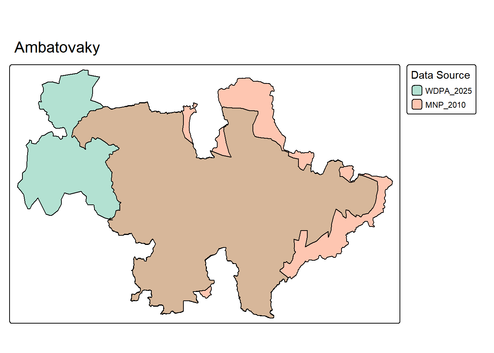
On retient comme géométrie avant 2015 la meilleure source spatiale identifiée dans all_PAs_conso (ici MNP_2010), en attendant la vérification du périmètre alternatif (ANGAP 2002 / WDPA archives).
Code
sat <-NULL|>add_modif_sat(data = all_PAs_conso,decisions = pa_decisions,wdpa_name_or_id ="Ambatovaky",decision_filter =list(year =2015, type_decision_pattern ="modifiant"),source_dataset_id ="MNP_2010",notes ="Périmètre antérieur au décret modifiant (géométrie MNP_2010 retenue après vérification visuelle)." )
Aspects légaux : Gestionnaire actuel : Madagascar National Parks (MNP) ; Gestion antérieure : Direction des Eaux et Forêts (Service de la Protection de la Nature d’Antananarivo et le Cantonnement Forestier de Moramanga) ; Création : selon le Arrêté n° 2778/MAER/SEGREF/FOR du 21 juillet 1970 ; Modification de statut : l’ancienne Station Forestière d’Analamazaotra, composée de deux parcelles, ainsi que la Réserve de faune pour Indris existant depuis 1970 (Arrêté n° 2778/MAER/SEGREF/FOR) constituent le parc national créé en 2015, selon le Décret n° 2015-732 du 21 avril 2015 ; Dernière modification de statut : suivant le Décret n° 2015-732 du 21 avril 2015 ; Surface actuelle : 874 ha (selon le décret en vigueur).
Les métadonnées indiquent que cette aire protégée a été créée en 1970 (Arrêté 2778/70), puis modifiée en 2015 :
=== Analamazaotra ===
WDPAID: 5021
Number of representations: 2
Datasets: WDPA_2025, SAPM_2010
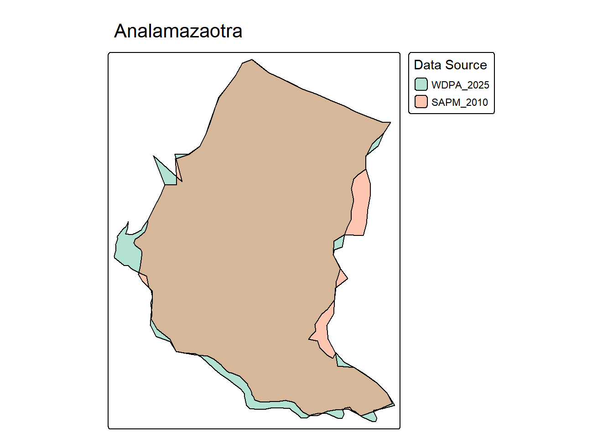
Conformément aux règles de construction de la SAT, seule la géométrie immédiatement antérieure à la modification de 2015 est ajoutée comme amendement spatial.
Code
sat <- sat |>add_modif_sat(data = all_PAs_conso,decisions = pa_decisions,wdpa_name_or_id ="Analamazaotra",decision_filter =list(year =2015, type_decision_pattern ="modifiant"),source_dataset_id ="SAPM_2010",valid_from ="1970-07-21",notes ="Périmètre antérieur au décret modifiant (géométrie SAPM_2010 retenue après vérification visuelle)." )
L’année de création de cette AP est 1970 (pas 2015 comme indiqué dans la WDPA 2025). On corrige STATUS_YR dans FAT.
Code
fat <-NULL|>add_modif_fat(decisions = pa_decisions,wdpa_name_or_id ="Analamazaotra",decision_filter =list(year =1970, num_texte ="2778/70"),attributes =list(STATUS_YR ="1970" ),amendment_type ="correction",valid_from ="1970-07-21",notes ="WDPA incorrectly shows STATUS_YR=2015 (date of upgrade to PN). Actual creation was 1970 as wildlife reserve for Indris." )
9.3 Analamerana
Goodman et al. (2018) indique pour cette AP: > Aspects légaux : Gestionnaire actuel : Madagascar National Parks (MNP) ; Gestion antérieure : Direction des Eaux et Forêts (Service de la Protection de la Nature d’Antananarivo et le Cantonnement Forestier d’Anivorano- Avaratra) ; Création : selon le Décret n° 56-208 du 20 février 1956 (Création de la Réserve Spéciale) ; Modification de statut : aucune ; Dernière modification de statut : aucune ; Surface actuelle : 34 700 ha (selon le décret en vigueur).
Le Décret 56-208 du 20 février 1956 créant la Réserve Spéciale d’Analamerana n’apparaît pas dans CNLEGIS (pré-2000). WDPA 2025 montre des erreurs majeures : DESIG=“Parc National” au lieu de “Reserve Speciale”, IUCN_CAT=II au lieu de IV, et STATUS_YR=2015 au lieu de 1956. Goodman confirme qu’aucune modification de statut n’a eu lieu.
Code
# FAT: Correction du DESIG, IUCN_CAT et STATUS_YRfat <-add_modif_fat(fat = fat,decisions = pa_decisions,wdpa_name_or_id =5022,manual_decision =list(date_texte =as.Date("1956-02-20"),type_texte ="Décret",num_texte ="56-208",objet_texte ="Création de la Réserve Spéciale d'Analamerana" ),attributes =list(DESIG ="Reserve Speciale",DESIG_ENG ="Special Reserve",DESIG_TYPE ="National",IUCN_CAT ="IV",STATUS_YR =1956 ),amendment_type ="correction",valid_from ="1956-02-20",notes ="WDPA incorrectly shows DESIG='Parc National', IUCN_CAT=II, and STATUS_YR=2015. Analamerana is a Special Reserve (RS) created in 1956 (Décret 56-208), IUCN category IV. No status change has occurred according to Goodman et al. 2018.")
Aspects légaux : Gestionnaire actuel : Madagascar National Parks (MNP) ; Gestion antérieure : Direction des Eaux et Forêts (Service de la Protection de la Nature d’Antananarivo et le Cantonnement Forestier de Tolagnaro) ; Création : selon le Décret du 11 juin 1939 (Création de la Réserve Naturelle Intégrale n° 11) ; Modification de statut : la Réserve Naturelle Intégrale d’Andohahela fut créée en 1939 suivant le Décret du 11 juin 1939 et ses limites ont été définies en 1966 avec Décret n° 66-242 du 1 juin 1966. Cette aire protégée a la particularité d’être constituée de trois parcelles adjacentes. En 2002, elle subit un déclassement en parc national selon le Décret n° 97-1043 du 7 août 2002. Le Décret n° 2015-785 du 28 avril 2015 apporte un léger changement de limites aux trois parcelles qui composaient déjà l’aire protégée (Parcelle I : 62 124 ha ; Parcelle II : 13 759 ha ; Parcelle III : 437 ha) ; Dernière modification de statut : suivant le Décret n° 2015- 785 du 28 avril 2015 ; Surface actuelle : 76 140 ha (selon le décret en vigueur).
NB : Il y a visiblement une erreur dans le texte, le décret 97-1043 date de 1997, pas 2002. Ce décret n’était pas disponible dans CNLEGIS, mais a été retrouvé et archivé à l’adresse : https://archive.org/details/decret-n-97-1043-du-07-aout-1997-pn-andoahahela
Les sources secondaires indiquent qu’Andohahela a connu plusieurs évolutions juridiques et spatiales depuis sa création initiale. Créée en 1939 comme Réserve Naturelle Intégrale, l’aire protégée a vu ses limites précisées en 1966, puis son statut modifié en 1997 (Décret n° 97-1043) lors de son déclassement en Parc National. Ces événements sont antérieurs à la disponibilité de données spatiales numériques homogènes et ne peuvent donc pas être documentés directement dans la Spatial Amendment Table.
Les textes réglementaires récents identifiés dans CNLEGIS confirment en revanche une modification explicite des limites en 2015, par l’Arrêté n°2015-785 du 28 avril 2015, portant modification des limites du Parc National d’Andohahela. On la retrouve bien dans nos données CNLEGIS :
Cette décision juridique constitue un déclencheur clair pour l’introduction d’un amendement spatial dans la SAT. On trouve plusieurs périmètres distincts dans les données. D’après les cartes disponible dans le plan d’aménagement et de gestion d’Andohahela datant de 2012, les polygones inclus dans SAPM 2010 sont ceux qui correspondent aux délimitations utilisées avant 2015.
=== Andohahela ===
WDPAID: 2303
Number of representations: 2
Datasets: WDPA_2025, SAPM_evol_2001-2011
Conformément aux règles de construction de la SAT, seule la géométrie immédiatement antérieure à la modification de 2015 est retenue comme amendement spatial documenté.
Code
sat <- sat |>add_modif_sat(data = all_PAs_conso,decisions = pa_decisions,wdpa_name_or_id ="Andohahela",decision_filter =list(year =2015, type_decision_pattern ="modifiant"),source_dataset_id ="SAPM_evol_2001-2011",notes ="Périmètre antérieur au décret modifiant (géométrie SAPM_2010 retenue après vérification visuelle)." )
Le changement de statut de 1997 (RNI → PN) constitue un changement d’attributs à documenter dans FAT. Bien que ce décret ne soit pas référencé dans CNLEGIS, il a été retrouvé et archivé.
Code
fat <- fat |>add_modif_fat(decisions = pa_decisions,wdpa_name_or_id ="Andohahela",manual_decision =list(date_texte ="1997-08-07",type_texte ="Décret",num_texte ="97-1043",objet_texte ="Portant déclassement en parc national" ),attributes =list(DESIG ="Réserve Naturelle Intégrale",DESIG_ENG ="Strict Nature Reserve",DESIG_TYPE ="National",IUCN_CAT ="Ia" ),amendment_type ="status_change",valid_from ="1966-06-01",secondary_reference ="https://archive.org/details/decret-n-97-1043-du-07-aout-1997-pn-andoahahela",notes ="RNI #11 transformed to PN in 1997 (Décret 97-1043 du 7 août 1997). Three-parcel structure maintained. Decree not in CNLEGIS but archived independently." ) |>add_modif_fat(decisions = pa_decisions,wdpa_name_or_id ="Andohahela",decision_filter =list(year =2015, type_decision_pattern ="modifiant"),attributes =list(STATUS_YR ="1939" ),amendment_type ="correction",valid_from ="1939-06-11",notes ="WDPA incorrectly shows STATUS_YR=2015 (date of PN creation). Actual creation was 1939 as RNI #11 (Décret du 11 juin 1939)." )
9.5 Andranomena
Goodman et al. (2018) indique pour cette AP: > Aspects légaux : Gestionnaire actuel : Madagascar National Parks (MNP) ; Gestion antérieure : Direction des Eaux et Forêts (Service de la Protection de la Nature d’Antananarivo et la Circonscription Forestière de Morondava) ; Création : selon le Décret n° 58-13 du 28 octobre 1958 (Création de la Réserve Spéciale) ; Modification de statut : la Réserve Spéciale d’Andranomena fut mise en place depuis 1955 selon l’Arrêté n° 152-SE/EF/CG du 16 avril 1955 et est définitivement créée en 1958 suivant le Décret n° 58-13 du 28 octobre 1958. Elle fait actuellement partie du Paysage Harmonieux Protégé de Menabe Antimena créé en 2015. Toutefois, elle conserve ses propres statuts juridique et foncier ainsi que toutes les règlementations y afférant ; Dernière modification de statut : aucune ; Surface actuelle : 6420 ha (selon le décret en vigueur).
WDPA 2025 montre STATUS_YR=2015, qui correspond à la création du Paysage Harmonieux Protégé de Menabe Antimena. Cependant, Goodman précise qu’Andranomena conserve ses propres statuts juridique et foncier. La Réserve Spéciale d’Andranomena a été créée en 1958 par le Décret 58-13, qui apparaît dans CNLEGIS.
Code
# FAT: Correction du STATUS_YRfat <-add_modif_fat(fat = fat,decisions = pa_decisions,wdpa_name_or_id =5040,decision_filter =list(num_texte ="58-13"),attributes =list(STATUS_YR =1958 ),amendment_type ="correction",valid_from ="1958-10-28",notes ="WDPA incorrectly shows STATUS_YR=2015 (date of creation of PHP Menabe Antimena which encompasses Andranomena). RS Andranomena was created in 1958 (Décret 58-13) and retains its own legal and land status according to Goodman et al. 2018.")
Aspects légaux : Gestionnaire actuel : Madagascar National Parks (MNP) ; Gestion antérieure : Direction des Eaux et Forêts (Service de la Protection de la Nature d’Antananarivo et le Cantonnement Forestier d’Ambalavao) ; Création : selon le Décret du 31 décembre 1927 (Création de la Réserve Naturelle Intégrale n° 5) ; Modification de statut : la Réserve Naturelle Intégrale d’Andringitra fut mise en place en 1927 suivant le Décret du 31 décembre 1927 et ses limites ont été fixées en 1966 avec le Décret n° 66-242 du 1 juin 1966. L’aire protégée subit un changement de statut en 1998 avec le Décret n° 98-376 du 19 août 1998 et devient un parc national ; Dernière modification de statut : suivant le Décret n° 98-376 du 19 août 1998 ; Surface actuelle : 31 160 ha (selon le décret en vigueur).
Les métadonnées indiquent que cette aire protégée a été créée en 1927 comme RNI #5, puis ses limites ont été fixées en 1966, avant un changement de statut en 1998:
[[1]]
# A tibble: 2 × 4
date_texte type_texte type_decision id_texte
<date> <chr> <chr> <chr>
1 1998-05-19 Décret modifiant 34798
2 1963-03-06 Décret modifiant 24157
[[2]]
[1] "Portant changement de statut de la Réserve naturelle intégrale n°5 d'Antsiranana en Parc national n°14."
[2] "Précisant\r\n les limites de la réserve naturelle intégrale n°5 dite de \r\nl'Andringitra, sous-préfecture d'Ambalavao, province de Fianarantsoa."
La modification survenue en 1998 ne porte pas sur un changement de frontière mais sur un changement de statut juridique (de RNI à PN). Aucun amendement spatial n’est donc nécessaire. On documente le changement de statut dans FAT.
Code
fat <- fat |>add_modif_fat(decisions = pa_decisions,wdpa_name_or_id ="Andringitra",decision_filter =list(year =1998, type_decision_pattern ="modifiant"),attributes =list(DESIG ="Réserve Naturelle Intégrale",DESIG_ENG ="Strict Nature Reserve",DESIG_TYPE ="National",IUCN_CAT ="Ia" ),amendment_type ="status_change",valid_from ="1966-06-01",notes ="RNI #5 transformed to PN in 1998 (Décret 98-376 du 19 août 1998). Boundaries remained unchanged from 1966 delimitation." ) |>add_modif_fat(decisions = pa_decisions,wdpa_name_or_id ="Andringitra",decision_filter =list(year =1998, type_decision_pattern ="modifiant"),attributes =list(STATUS_YR ="1927" ),amendment_type ="correction",valid_from ="1927-12-31",notes ="WDPA incorrectly shows STATUS_YR=1998 (date of PN upgrade). Actual creation was 1927 as RNI #5 (Décret du 31 décembre 1927)." )
9.7 Anjanaharibe_sud
Goodman et al. (2018) indique pour cette AP: > Aspect légaux : Gestionnaire actuel : Madagascar National Parks (MNP) ; Gestion antérieure : Direction des Eaux et Forêts (Service de la Protection de la Nature d’Antananarivo et le Cantonnement Forestier d’Andapa). Le PCDI Marojejy / Anjanaharibe-Sud était installé en 1993 et la gestion de ces deux sites a connu des phases successives : au cours de la première, elle a été gérée conjointement par la Direction des Eaux et Forêts et le WWF et durant la deuxième, l’opérateur principal pour sa gestion était le WWF, sous la coordination de l’Association Nationale pour la Gestion des Aires Protégées. ; Création : selon le Décret n° 58-12 du 28 octobre 1958 (Création de la Réserve Spéciale) ; Modification de statut : créée en 1958 suivant le Décret n° 58-12 du 28 octobre 1958, la Réserve Spéciale d’Anjanaharibe- Sud subit un changement de limites sous le Décret n° 2015-729 du 21 avril 2015 ; Dernière modification de statut : suivant le Décret n° 2015-729 du 21 avril 2015 ; Surface actuelle : 26 903 ha (selon le décret en vigueur).
Les métadonnées indiquent que cette aire protégée a été créée en 1958 comme Réserve Spéciale, puis ses limites ont été modifiées en 2015:
Après inspection visuelle des différentes sources disponibles, on retient MNP_2010 comme source des limites avant la modification de 2015. Cette géométrie représente le périmètre tel que géré par Madagascar National Parks avant l’entrée en vigueur du décret modificatif.
=== Anjanaharibe_sud ===
WDPAID: 5023
Number of representations: 2
Datasets: WDPA_2025, MNP_2010
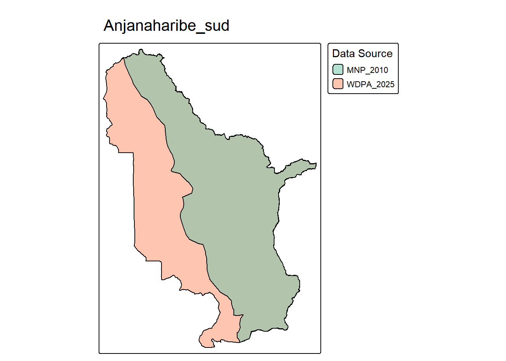
Conformément aux règles de construction de la SAT, seule la géométrie immédiatement antérieure à la modification de 2015 est ajoutée comme amendement spatial.
Code
sat <- sat |>add_modif_sat(data = all_PAs_conso,decisions = pa_decisions,wdpa_name_or_id ="Anjanaharibe_sud",decision_filter =list(year =2015, type_decision_pattern ="modifiant"),source_dataset_id ="MNP_2010",valid_from ="1958-10-28",notes ="Périmètre antérieur au décret modifiant (géométrie MNP_2010 retenue après vérification visuelle)." )
L’année de création de cette AP est 1958 (pas 2015 comme indiqué dans la WDPA 2025). On corrige STATUS_YR dans FAT.
Code
fat <- fat |>add_modif_fat(decisions = pa_decisions,wdpa_name_or_id ="Anjanaharibe_sud",decision_filter =list(year =2015, type_decision_pattern ="modifiant"),attributes =list(STATUS_YR ="1958" ),amendment_type ="correction",valid_from ="1958-10-28",notes ="WDPA incorrectly shows STATUS_YR=2015 (date of boundary modification). Actual creation was 1958 as Réserve Spéciale (Décret 58-12 du 28 octobre 1958)." )
9.8 Ankarafantsika
Goodman et al. (2018) indique pour cette AP: Aspects légaux : Gestionnaire actuel : Madagascar National Parks (MNP) ; Gestion antérieure : Direction des Eaux et Forêts (Service de la Protection de la Nature d’Antananarivo et le Service Provincial des Eaux et Forêts de Mahajanga) ; Création : selon le Décret du 31 décembre 1927 (Création de la Réserve Naturelle Intégrale n° 7) ; Modification de statut : la Réserve Naturelle Intégrale d’Ankarafantsika fut créée en 1927 et ses limites ont été précisées en 1966 avec le Décret n° 66-242 du 1 juin 1966 (60 520 ha). Parallèlement, des territoires de la Forêt d’Ankarafantsika sur les districts de Marovoay et Ambato Boeny ont été classés réserves forestières avec l’Arrêté du 24 décembre 1929 (75 000 ha). De plus, le Jardin botanique d’Ampijoroa (district d’Ambato Boeny, 91 ha), recensé en 1969 par le Domaine Forestier National est devenu la Station Forestière d’Ampijoroa (4974 ha) en 1999 par l’Arrêté interministériel n° 13-056/99 du 7 décembre 1999. En 2002, la réserve naturelle intégrale créée en 1927 et reclassée en 1966, les réserves forestières instituées en 1929 ainsi que la Station Forestière d’Ampijoroa sont toutes instituées en un seul parc national (Décret n° 2002-798 du 7 août 2002, 130 000 ha). Ce dernier subit un changement de limites en 2015 sous le Décret n° 2015-730 du 21 avril 2015 ; Dernière modification de statut : suivant le Décret n° 2015-730 du 21 avril 2015 ; Surface actuelle : 136 513 ha (selon le décret en vigueur).
Les sources secondaires indiquent qu’Ankarafantsika a connu une évolution complexe, avec la création de la RNI #7 en 1927, l’établissement de réserves forestières adjacentes en 1929, et la consolidation de l’ensemble en parc national en 2002, puis modification de statut et de frontières en 2015.
=== Ankarafantsika ===
WDPAID: 1299
Number of representations: 2
Datasets: WDPA_2025, ANGAP_2002
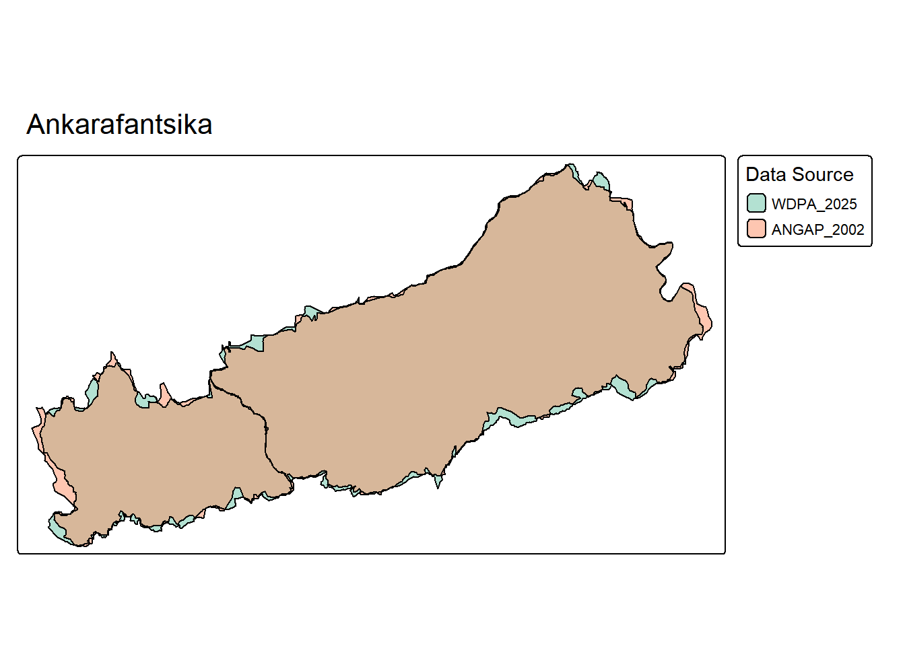
L’extension de 2002 a fait l’objet d’une cartographie détaillée par Conservation International (Alonso and Schulenberg 2002), mais les périmètres antérieurs à 2002 sont en cours de re-vectorisation et ne sont pas encore disponibles pour documentation dans la SAT.
Ankarafantsika 2002 expansion
Les textes légaux identifient plusieurs décisions modificatives, notamment en 2002 (création du PN par consolidation) et 2015 (modification des limites). Après inspection visuelle, on retient ANGAP_2002 comme source du périmètre avant la modification de 2015.
Code
sat <- sat |>add_modif_sat(data = all_PAs_conso,decisions = pa_decisions,wdpa_name_or_id ="Ankarafantsika",decision_filter =list(year =2015, type_decision_pattern ="modifiant"),source_dataset_id ="ANGAP_2002",valid_from ="2002-08-07",notes ="Périmètre 2002-2015 avant modification des limites (géométrie ANGAP_2002 retenue après vérification visuelle). Périmètres pré-2002 en cours de re-vectorisation." )
L’année de création de cette AP est 1927 (pas 2015 comme pourrait l’indiquer WDPA). La transformation en PN date de 2002. On documente le changement de statut dans FAT.
Code
fat <- fat |>add_modif_fat(decisions = pa_decisions,wdpa_name_or_id ="Ankarafantsika",decision_filter =list(year =2002, type_decision_pattern ="modifiant"),attributes =list(DESIG ="Réserve Naturelle Intégrale",DESIG_ENG ="Strict Nature Reserve",DESIG_TYPE ="National",IUCN_CAT ="Ia" ),amendment_type ="status_change",valid_from ="1927-12-31",secondary_reference ="Alonso & Shuldenberg 2002",notes ="RNI #7 created 1927, boundaries clarified 1966. RNI (+ forest reserves + Station Forestière Ampijoroa) consolidated into PN in 2002 (Décret 2002-798 du 7 août 2002). Major boundary expansion." ) |>add_modif_fat(decisions = pa_decisions,wdpa_name_or_id ="Ankarafantsika",decision_filter =list(year =2015, type_decision_pattern ="modifiant"),attributes =list(STATUS_YR ="1927" ),amendment_type ="correction",valid_from ="1927-12-31",notes ="WDPA may show STATUS_YR=2002 or 2015. Actual creation was 1927 as RNI #7 (Décret du 31 décembre 1927)." )
9.9 Ankarana
Goodman et al. (2018) indique pour cette AP: > Aspects légaux : Gestionnaire actuel : Madagascar National Parks (MNP) ; Gestion antérieure : Direction des Eaux et Forêts (Service de la Protection de la Nature d’Antananarivo et Triage Forestier d’Anivorano) ; Création : selon le Décret n° 56-208 du 20 février 1956 (Création de la Réserve Spéciale) ; Modification de statut : aucune ; Dernière modification de statut : aucune ; Surface actuelle : 18 225 ha (selon le décret en vigueur).
Création en 1956 ou 2015 (dans WDPA 2025 c’est 2015) ?
Le Décret 56-208 du 20 février 1956 créant la Réserve Spéciale d’Ankarana n’apparaît pas dans CNLEGIS (pré-2000). WDPA 2025 montre STATUS_YR=2015 au lieu de 1956. DESIG et IUCN_CAT sont corrects (Reserve Speciale, IV). Goodman confirme qu’aucune modification de statut n’a eu lieu.
Code
# FAT: Correction du STATUS_YRfat <-add_modif_fat(fat = fat,decisions = pa_decisions,wdpa_name_or_id =5024,manual_decision =list(date_texte =as.Date("1956-02-20"),type_texte ="Décret",num_texte ="56-208",objet_texte ="Création de la Réserve Spéciale d'Ankarana" ),attributes =list(STATUS_YR =1956 ),amendment_type ="correction",valid_from ="1956-02-20",notes ="WDPA incorrectly shows STATUS_YR=2015. RS Ankarana was created in 1956 (Décret 56-208). No status change has occurred according to Goodman et al. 2018.")
9.10 Befotaka-Midongy du Sud
Goodman et al. (2018) indique pour cette AP: > Aspects légaux : Gestionnaire actuel : Madagascar National Parks (MNP) ; Gestion antérieure : Direction des Eaux et Forêts (Service de la Protection de la Nature d’Antananarivo ; le Cantonnement Forestier de Midongy du Sud et la Circonscription Forestière de Manakara) ; Création : selon le Décret n° 97-1451 du 18 décembre 1997 ; Modification de statut : les Forêts Classées de Soarano (Arrêté n° 150-DOM/PF du 22 janvier 1953) et de Befotaka (Arrêté n° 08-DOM/PF du 15 avril 1953) localisées à 100 km à l’ouest de Vangaindrano, existent déjà depuis 1953 et font actuellement partie intégrante du Parc National de Befotaka-Midongy du Sud créé en 1997 selon le Décret n° 97-1451 du 18 décembre 1997 ; Dernière modification de statut : aucune ; Surface actuelle : 192 198 ha (selon le décret en vigueur).
Le Décret 97-1451 du 18 décembre 1997 portant création du Parc National de Befotaka-Midongy du Sud apparaît bien dans la base CNLEGIS. Ce parc intègre des parties des forêts classées de Soarano et Befotaka créées en 1953.
WDPA 2025 montre STATUS_YR=1953, ce qui est incorrect. Cette date correspond aux forêts classées qui ne sont pas des aires protégées au sens du Code de la Conservation. Le Parc National a été créé en 1997.
Code
# FAT: Correction du STATUS_YRfat <-add_modif_fat(fat = fat,decisions = pa_decisions,wdpa_name_or_id =20272,decision_filter =list(num_texte ="97-1451"),attributes =list(STATUS_YR =1997 ),amendment_type ="correction",valid_from ="1997-12-18",notes ="WDPA incorrectly shows STATUS_YR=1953 (date of classified forests that were not protected areas). PN Befotaka-Midongy du Sud was created in 1997 (Décret 97-1451), incorporating parts of the Soarano and Befotaka classified forests from 1953.")
9.11 Bemaraha
Goodman et al. (2018) indique pour cette AP: > Aspects légaux : Gestionnaire actuel : Madagascar National Parks (MNP) ; Gestion antérieure : Direction des Eaux et Forêts (Service de la Protection de la Nature d’Antananarivo) ; Création : selon le Décret du 31 décembre 1927 (Création de la Réserve Naturelle Intégrale n° 9) ; Modification de statut : la création de la réserve naturelle intégrale fut réalisée en 1927 suivant le Décret du 31 décembre 1927 complétée par le Décret n° 66-242 du 1 juin 1966 (152 000 ha). En 2011, l’aire protégée subit une modification de limites (157 710 ha) et de statut en parc national suivant le Décret n° 2011- 498 du 6 septembre 2011 ; Dernière modification de statut : suivant le Décret n° 2011-498 du 6 septembre 2011 ; Surface actuelle : 157 710 ha (selon le décret en vigueur).
Le texte de Goodman et al. omet la modification introduite par le décret 97-1045.
Les textes légaux identifient deux décisions modificatives : 1997 (modification des limites) et 2011 (modification des limites + changement de statut RNI → PN). Nous documentons la modification de 2011, pour laquelle nous disposons d’une géométrie pré-modification. Les périmètres antérieurs à 1997 ne sont pas disponibles.
=== Bemaraha ===
WDPAID: 303702
Number of representations: 2
Datasets: WDPA_2025, SAPM_2010
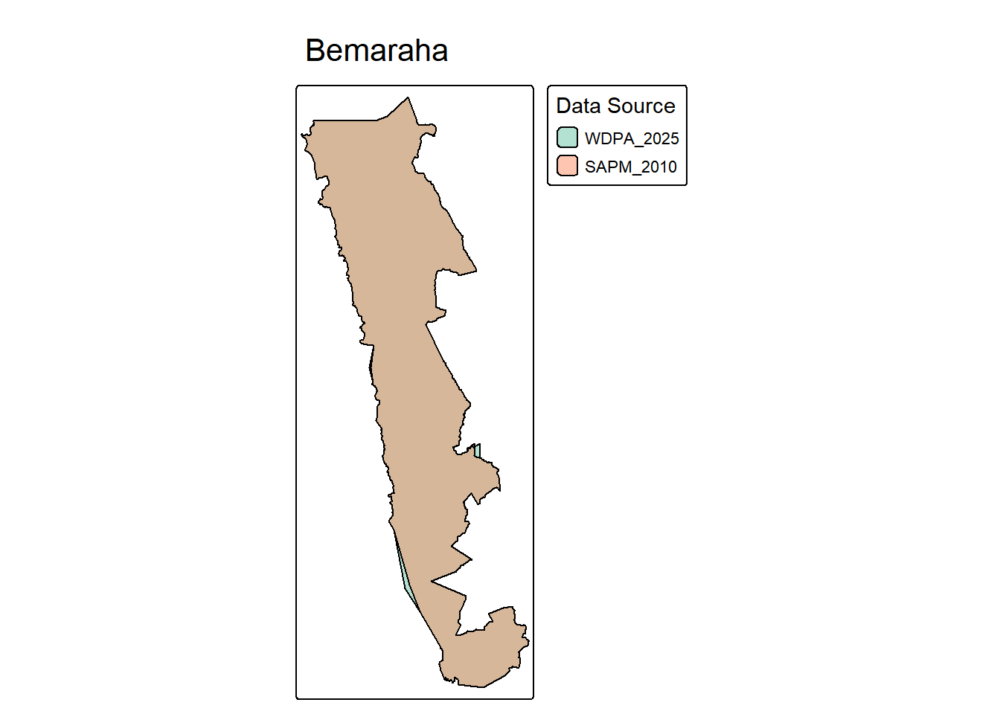
Après inspection visuelle, on retient SAPM_2010 comme source du périmètre avant la modification de 2011.
Code
sat <- sat |>add_modif_sat(data = all_PAs_conso,decisions = pa_decisions,wdpa_name_or_id ="Bemaraha",decision_filter =list(year =2011, type_decision_pattern ="modifiant"),source_dataset_id ="SAPM_2010",valid_from ="1997-08-07",notes ="Périmètre 1997-2011 avant modification des limites (géométrie SAPM_2010 retenue après vérification visuelle). Périmètres pré-1997 non disponibles." )
L’année de création de cette AP est 1927 (pas 2011). La transformation en PN date de 2011. On documente le changement de statut dans FAT.
Code
fat <- fat |>add_modif_fat(decisions = pa_decisions,wdpa_name_or_id ="Bemaraha",decision_filter =list(year =2011, type_decision_pattern ="modifiant"),attributes =list(DESIG ="Réserve Naturelle Intégrale",DESIG_ENG ="Strict Nature Reserve",DESIG_TYPE ="National",IUCN_CAT ="Ia" ),amendment_type ="status_change",valid_from ="1997-08-07",notes ="RNI #9 created 1927, boundaries modified 1997 (Décret 97-1045). Transformed to PN in 2011 (Décret 2011-498 du 6 septembre 2011) with boundary modification." ) |>add_modif_fat(decisions = pa_decisions,wdpa_name_or_id ="Bemaraha",decision_filter =list(year =2011, type_decision_pattern ="modifiant"),attributes =list(STATUS_YR ="1927" ),amendment_type ="correction",valid_from ="1927-12-31",notes ="WDPA 2025 show STATUS_YR=1997. Actual creation was 1927 as RNI #9 (Décret du 31 décembre 1927)." )
9.12 Betampona
Goodman et al. (2018) indique pour cette AP: > Aspects légaux : Gestionnaire actuel : Madagascar National Parks (MNP) depuis 1996 ; Gestion antérieure : Service des Eaux & Forêts de Toamasina & SAF/FJKM ; Création : selon le Décret du 31 décembre 1927 (Création de la Réserve Naturelle Intégrale n° 1) ; Modification de statut : la Réserve Naturelle Intégrale de Betampona fut créée en 1927 sous le Décret du 31 décembre 1927 complété par le Décret n° 66-242 du 1 juin 1966 ; Dernière modification de statut : suivant le Décret n° 66-242 du 1 juin 1966 ; Surface actuelle : 2228 ha (selon le décret en vigueur).
WDPA 2025 montre STATUS_YR=1997, ce qui est incorrect: aucun changement n’a eu lieu en 1997. La RNI a été créée en 1927 et maintient ce statut jusqu’à aujourd’hui.
Code
# FAT: Correction du STATUS_YRfat <-add_modif_fat(fat = fat,decisions = pa_decisions,wdpa_name_or_id =2310,manual_decision =list(date_texte =as.Date("1927-12-31"),type_texte ="Décret",num_texte ="1927-12-31",objet_texte ="Création de la Réserve Naturelle Intégrale n°1 de Betampona" ),attributes =list(STATUS_YR =1927 ),amendment_type ="correction",valid_from ="1927-12-31",notes ="WDPA incorrectly shows STATUS_YR=1997. RNI Betampona was created in 1927 as RNI #1 (Décret du 31 décembre 1927, complemented by Décret 66-242 of 1966). No status change occurred in 1997.")
9.13 Beza Mahafaly
Goodman et al. (2018) indique pour cette AP: > Aspects légaux : Gestionnaire actuel : Madagascar National Parks (MNP) ; Gestion antérieure : Direction des Eaux et Forêts (Service de la Protection de la Nature d’Antananarivo) et Ecole Supérieure des Sciences Agronomiques, Forêts (ESSA-Forêts) ; Création : selon le Décret n° 86-168 du 4 juin 1986 ; Modification de statut : la Réserve Spéciale de Bezà- Mahafaly, créée en 1986 selon le Décret n° 86-168 du 4 juin 1986, a subi un changement de limites en 2015 sous le Décret n° 2015-733 du 21 avril 2015 ; Dernière modification de statut : suivant le Décret n° 2015-733 du 21 avril 2015 ; Surface actuelle : 4200 ha (selon le décret en vigueur).
Après inspection visuelle et croisement avec des cartes incluses dans des publications scientifiques (Sussman et al. 2012), on retient MNP_2010 comme source des limites avant la modification de 2015.
=== Beza Mahafaly ===
WDPAID: 10634
Number of representations: 2
Datasets: WDPA_2025, MNP_2010
La modification de 2015 ne porte que sur les limites, sans changement de statut (reste Réserve Spéciale). On documente uniquement l’amendement spatial dans SAT.
Code
sat <- sat |>add_modif_sat(data = all_PAs_conso,decisions = pa_decisions,wdpa_name_or_id ="Beza Mahafaly",decision_filter =list(year =2015, type_decision_pattern ="modifiant"),source_dataset_id ="MNP_2010",valid_from ="1986-06-04",notes ="Géométrie MNP_2010 retenue après vérification visuelle et croisement avec Sussman et al. 2012, https://doi.org/10.1007/978-3-642-22514-7_3)." )
9.14 Bora
Goodman et al. (2018) indique pour cette AP: > Aspects légaux : Gestionnaire actuel : Ministère de l’Environnement, de l’Ecologie et des Forêts (MEEF) ; Gestion antérieure : Direction des Eaux et Forêts (Service de la Protection de la Nature d’Antananarivo et la Circonscription Forestière d’Antsohihy) et Madagascar National Parks (MNP) ; Création : selon le Décret n° 56-208 du 20 février 1956 ; Modification de statut : la Réserve Spéciale de Bora, initialement composée de deux parcelles (Parcelle I : 4787 ha et Parcelle II : 3650 ha) et d’un Jardin Botanique (54 ha), a été créée sous le Décret n° 56-208 du 20 février 1956. L’aire protégée subit un changement de limites en 1964 avec le déclassement de la deuxième parcelle en réserve forestière suivant le Décret n° 64-159 du 22 avril 1964 ; Dernière modification de statut : suivant le Décret n° 64-159 du 22 avril 1964 ; Surface actuelle : 4841 ha (selon le décret en vigueur).
Note
Cette aire protégée a connu une modification en 1964, mais aucune géométrie antérieure à cette date n’est disponible pour documentation dans la SAT.
9.15 Cap Sainte Marie
Goodman et al. (2018) indique pour cette AP: > Aspects légaux : Gestionnaire actuel : Madagascar National Parks (MNP) ; Gestion antérieure : Direction des Eaux et Forêts (Service de la Protection de la Nature d’Antananarivo et Cantonnement Forestier de Tsihombe) ; Création : selon le Décret n° 62-527 du 24 octobre 1962 ; Modification de statut : la Réserve Spéciale de Cap Sainte Marie fut créée en 1962 sous le Décret n° 62-527 du 24 octobre 1962 puis subit un changement de limites en 2015 sous le Décret n° 2015-734 du 21 avril 2015 ; Dernière modification de statut : suivant le Décret n° 2015-734 du 21 avril 2015 ; Surface actuelle : 3610 ha (selon le décret en vigueur).
Les métadonnées indiquent bien que cette aire protégée a été créée en 1962 comme Réserve Spéciale, puis ses limites ont été modifiées en 2015:
=== Cap Sainte Marie ===
WDPAID: 5041
Number of representations: 2
Datasets: WDPA_2025, MNP_2010
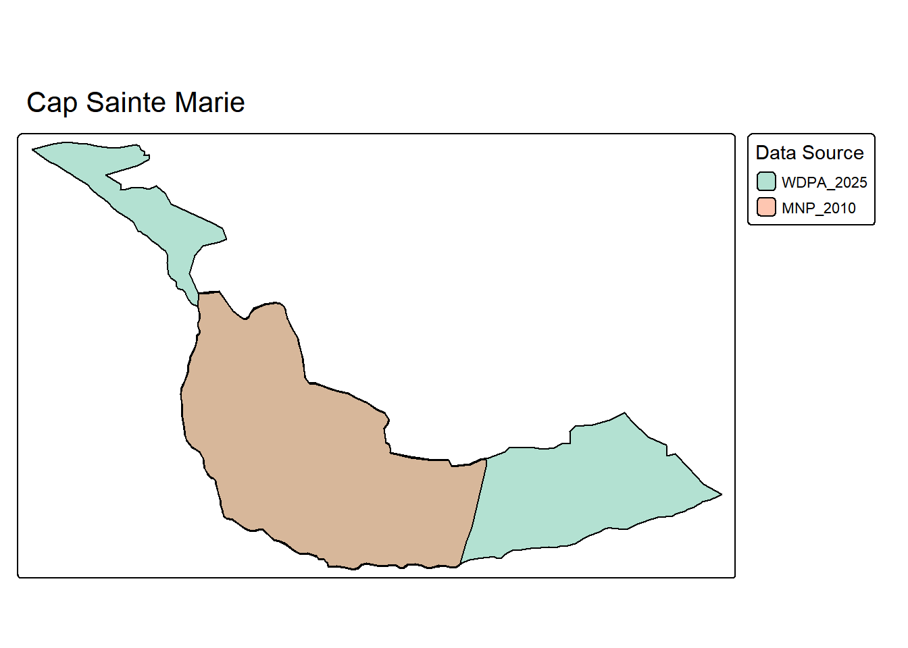
La modification de 2015 ne porte que sur les limites, sans changement de statut (reste Réserve Spéciale). On documente l’amendement spatial dans SAT.
Code
sat <- sat |>add_modif_sat(data = all_PAs_conso,decisions = pa_decisions,wdpa_name_or_id ="Cap Sainte Marie",decision_filter =list(year =2015, type_decision_pattern ="modifiant"),source_dataset_id ="MNP_2010",valid_from ="1962-10-24",notes ="Périmètre 1962-2015 avant modification des limites (géométrie MNP_2010 retenue après vérification visuelle)." )
L’année de création de cette AP est 1962 (pas 2015 comme indiqué dans WDPA 2025). On corrige STATUS_YR dans FAT.
Code
fat <- fat |>add_modif_fat(decisions = pa_decisions,wdpa_name_or_id ="Cap Sainte Marie",decision_filter =list(year =2015, type_decision_pattern ="modifiant"),attributes =list(STATUS_YR ="1962" ),amendment_type ="correction",valid_from ="1962-10-24",notes ="WDPA incorrectly shows STATUS_YR=2015 (date of boundary modification). Actual creation was 1962 as Réserve Spéciale (Décret 62-527 du 24 octobre 1962)." )
9.16 Kirindy Mite
Goodman et al. (2018) indique pour cette AP: > Aspects légaux : Gestionnaire actuel : Madagascar National Parks (MNP) ; Gestion antérieure : aucune ; Création : selon le Décret n° 97-1453 du 18 décembre 1997 ; Modification de statut : une partie de la Forêt Classée de Marofihitra mise en place par l’Arrêté n° 1462-MFR/FOR du 5 juin 1963 est intégrée dans le Parc National de Kirindy Mité créé en 1997 suivant le Décret n° 97-1453 du 18 décembre 1997. Il subit un changement de limites en 2015 sous le Décret n° 2015-735 du 21 avril 2015 ; Dernière modification de statut : suivant le Décret n° 2015-735 du 21 avril 2015 ; Surface actuelle : 156 350 ha (selon le décret en vigueur).
Les métadonnées indiquent que cette aire protégée a été créée en 1997, puis ses limites ont été modifiées en 2015:
=== Kirindy Mite ===
WDPAID: 303700
Number of representations: 2
Datasets: WDPA_2025, MNP_2010
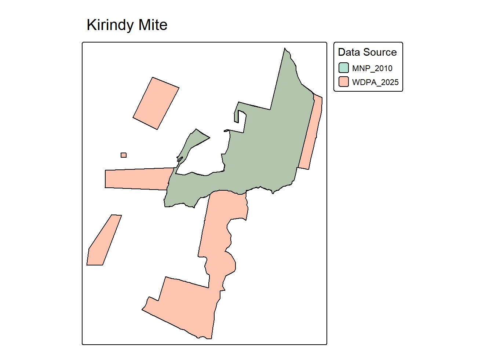
La modification de 2015 ne porte que sur les limites, sans changement de statut (reste Parc National). On documente uniquement l’amendement spatial dans SAT.
Code
sat <- sat |>add_modif_sat(data = all_PAs_conso,decisions = pa_decisions,wdpa_name_or_id ="Kirindy Mite",decision_filter =list(year =2015, type_decision_pattern ="modifiant"),source_dataset_id ="MNP_2010",valid_from ="1997-12-18",notes ="Périmètre 1997-2015 avant modification des limites (géométrie MNP_2010 retenue après vérification visuelle)." )
9.17 Lokobe
Goodman et al. (2018) indique pour cette AP: > Aspects légaux : Gestionnaire actuel : Madagascar National Parks (MNP) ; Gestion antérieure : Direction des Eaux et Forêts (Service de la Protection de la Nature d’Antananarivo et le Cantonnement Forestier de Nosy Be à Hell-Ville) ; Création : selon le Décret du 31 décembre 1927 (Création de la Réserve Naturelle Intégrale n° 6) ; Modification de statut : la Réserve Naturelle Intégrale de Lokobe fut créée en 1927 selon le Décret du 31 décembre 1927 complété par le Décret n° 66-242 du 1 juin 1966. En 2011, l’aire protégée subit un changement de statut et de limites sous le Décret n° 2011-500 du 6 juillet 2011 et est déclassée en parc national. En effet, la partie terrestre occupée auparavant par la réserve naturelle intégrale (740 ha) ainsi que son extension marine (122 ha) située dans le District de Nosy Be constituent l’actuel parc national ; Dernière modification de statut : suivant le Décret n° 2011-500 du 6 juillet 2011 ; Surface actuelle : 862 ha (selon le décret en vigueur).
Les textes légaux confirment que cette aire protégée a été transformée en parc national en 2011 avec modification des limites.
# Extract pre-2011 geometry from SAPM_2010 (excluding "Lokobe extension")lokobe_pre2011 <- all_PAs_conso |>filter(WDPA_NAME =="Lokobe", dataset_id =="SAPM_2010") |>filter(NAME =="Lokobe") # Only main Lokobe, not the extension# For plotting, filter the consolidated data to exclude "Lokobe extension"lokobe_current <- all_PAs_conso |>filter(NAME =="Lokobe", dataset_id =="WDPA_2025")lokobe_filtered <-bind_rows(lokobe_pre2011, lokobe_current)plot_pa_sources("Lokobe",data = lokobe_filtered,sources =c("SAPM_2010", "WDPA_2025"))
=== Lokobe ===
WDPAID: 2311
Number of representations: 2
Datasets: SAPM_2010, WDPA_2025
Lokobe (WDPAID 2311) a subi un changement de statut de Réserve Naturelle Intégrale (RNI/Catégorie UICN Ia) à Parc National (PN/Catégorie UICN II) en 2011 par le Décret 2011-500. Le décret a également autorisé une modification des limites incluant une extension marine (122 ha) et l’intégration de la partie terrestre (740 ha).
Le jeu de données SAPM_2010 contient deux entités distinctes pour le WDPAID 2311 : “Lokobe” (~7,28 km²) représentant la RNI terrestre originale, et “Lokobe extension” représentant les extensions prévues. Pour la géométrie historique pré-2011, nous utilisons uniquement le polygone principal “Lokobe”, qui correspond à la RNI originale de 740 ha mentionnée dans le décret.
WDPA 2025 rapporte 8,62 km² (862 ha comme indiqué dans le décret), reflétant la limite post-2011 incluant l’extension marine. La superficie calculée à partir de SAPM_2010 (~7,28 km²/728 ha) est proche des 740 ha terrestres du décret, les différences étant attribuables aux méthodes de projection et de calcul.
STATUS_YR dans WDPA 2025 est correctement fixé à 2011 (reflétant la date de désignation en PN). Cependant, la RNI originale a été créée en 1927, ce qui doit être suivi dans la FAT.
Goodman et al. (2018) indique pour cette AP: > Aspects légaux : Gestionnaire actuel : Madagascar National Parks (MNP) ; Gestion antérieure : aucune ; Création : selon le Décret n° 58-10 du 28 octobre 1958 ; Modification de statut : l’aire protégée fut créée en 1958 selon le Décret n° 58-10 du 28 octobre 1958 complété par l’Arrêté n° 1723- MFR/FOR du 14 septembre 1963 qui définit clairement ses limites ; Dernière modification de statut : aucune ; Surface actuelle : 12 475 ha (selon le décret en vigueur).
Les métadonnées confirment que cette aire protégée a été créée en 1958 comme Réserve Spéciale, sans modification ultérieure:
Goodman et al. (2018) indique pour cette AP: > Aspects légaux : Gestionnaire actuel : Madagascar National Parks (MNP) ; Gestion antérieure : Direction des Eaux et Forêts (Service de la Protection de la Nature d’Antananarivo ; le Cantonnement Forestier de Farafangana et la Circonscription Forestière de Manakara) ; Création : selon le Décret n° 62-637 du 5 décembre 1962 ; Modification de statut : une partie de la Réserve Forestière d’Efasy mise en place en 1952 suivant l’Arrêté n° 814- DOM du 9 avril 1952 (7850 ha) de 2800 ha fut reclassée et est devenue la Réserve Spéciale de Manombo en 1962, selon le Décret n° 62-637 du 5 décembre 1962. Cette dernière subit une modification de limites en 1967 sous le Décret n° 67-051 du 31 janvier 1967 ; Dernière modification de statut : suivant le Décret n° 67-051 du 31 janvier 1967 ; Surface actuelle : 5320 ha (selon le décret en vigueur).
Les métadonnées confirment que cette aire protégée a été créée en 1962 comme Réserve Spéciale, puis ses limites ont été modifiées en 1967:
1967-01-31: modification des limites, mais pas de géométrie antérieure disponible pour documentation dans la SAT.
9.20 Manongarivo
Goodman et al. (2018) indique pour cette AP: > Aspects légaux : Gestionnaire actuel : Madagascar National Parks (MNP) ; Gestion antérieure : Direction des Eaux et Forêts (Service de la Protection de la Nature d’Antananarivo et le Cantonnement Forestier d’Ambanja) ; Création : selon le Décret n° 56-208 du 20 février 1956 (Création de la Réserve Spéciale) ; Modification de statut : la réserve spéciale fut créée en 1956 selon le Décret n° 56-208 du 20 février 1956 et subit une modification de limites en 2015 sous le Décret n° 2015-784 du 28 avril 2015 ; Dernière modification de statut : suivant le Décret n° 2015-784 du 28 avril 2015 ; Surface actuelle : 51 568 ha (selon le décret en vigueur).
Les métadonnées indiquent que les limites de cette aire protégée aont été modifiées en 2015:
=== Manongarivo ===
WDPAID: 5026
Number of representations: 2
Datasets: WDPA_2025, MNP_2010
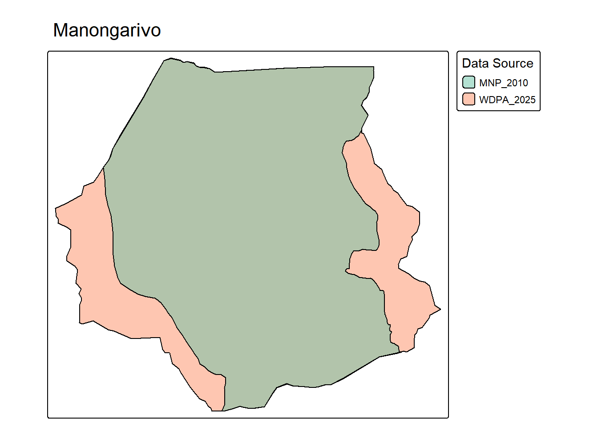
La modification de 2015 ne porte que sur les limites, sans changement de statut (reste Réserve Spéciale). On documente l’amendement spatial dans SAT.
Code
sat <- sat |>add_modif_sat(data = all_PAs_conso,decisions = pa_decisions,wdpa_name_or_id ="Manongarivo",decision_filter =list(year =2015, type_decision_pattern ="modifiant"),source_dataset_id ="MNP_2010",valid_from ="1956-02-20",notes ="Périmètre 1956-2015 avant modification des limites (géométrie MNP_2010 retenue après vérification visuelle)." )
L’année de création de cette AP est 1956 (pas 2015 comme indiqué dans WDPA 2025). On corrige STATUS_YR dans FAT.
Code
fat <- fat |>add_modif_fat(decisions = pa_decisions,wdpa_name_or_id ="Manongarivo",decision_filter =list(year =2015, type_decision_pattern ="modifiant"),attributes =list(STATUS_YR ="1956" ),amendment_type ="correction",valid_from ="1956-02-20",notes ="WDPA incorrectly shows STATUS_YR=2015 (date of boundary modification). Actual creation was 1956 as Réserve Spéciale (Décret 56-208 du 20 février 1956)." )
9.21 Mantadia
Goodman et al. (2018) indique pour cette AP: > Aspects légaux : Gestionnaire actuel : Madagascar National Parks (MNP) ; Gestion antérieure : aucune ; Création : selon le Décret n° 89-011 du 11 janvier 1989 ; Modification de statut : le Parc National de Mantadia fut créé en 1989 suivant le Décret n° 89-011 du 11 janvier 1989 (10 000 ha) puis subit une extension de limites en 2002 selon le Décret n° 2002-790 du 7 août 2002 ; Dernière modification de statut : suivant le Décret n° 2002-790 du 7 août 2002 ; Surface actuelle : 15 480 ha (selon le décret en vigueur).
Les métadonnées confirment que cette aire protégée a été créée en 1989 comme Parc National, puis ses limites ont été étendues en 2002:
Malheureusement, on ne dispose pas de source géométrique antérieure à 2002 pour cette AP.
Note
Voir avec MNP s’il est possible de reconstituer la géométrie initiale de 1989.
9.22 Marojejy
Goodman et al. (2018) indique pour cette AP: > Aspects légaux : Gestionnaire actuel : Madagascar National Parks (MNP) ; Gestion antérieure : Direction des Eaux et Forêts (Service de la Protection de la Nature d’Antananarivo) et World Wide Fund for Nature (WWF) ; Création : selon le Décret du 3 janvier 1952 (Création de la Réserve Naturelle Intégrale n° 12) ; Modification de statut : la Réserve Naturelle Intégrale de Marojejy fut créée en 1952 sous le Décret du 3 janvier 1952 complété par le Décret n° 66-242 du 1 juin 1966. En 1998, l’aire protégée subit un déclassement en parc national suivant le Décret n° 98-375 du 19 mai 1998 ; Dernière modification de statut : suivant le Décret n° 98-375 du 19 mai 1998 ; Surface actuelle : 60 050 ha (selon le décret en vigueur).
Les métadonnées confirment que cette aire protégée a été créée en 1952 comme RNI, puis reclassée en Parc National en 1998:
La modification de 1998 ne porte que sur le statut (de RNI à PN), sans changement de limites. On documente le changement de statut dans FAT.
Code
fat <- fat |>add_modif_fat(decisions = pa_decisions,wdpa_name_or_id ="Marojejy",decision_filter =list(year =1998, type_decision_pattern ="modifiant"),attributes =list(DESIG ="Réserve Naturelle Intégrale",DESIG_ENG ="Strict Nature Reserve",DESIG_TYPE ="National",IUCN_CAT ="Ia" ),amendment_type ="status_change",valid_from ="1966-06-01",notes ="RNI #12 created 1952, boundaries clarified 1966. Transformed to PN in 1998 (Décret 98-375 du 19 mai 1998). No boundary change." ) |>add_modif_fat(decisions = pa_decisions,wdpa_name_or_id ="Marojejy",decision_filter =list(year =1998, type_decision_pattern ="modifiant"),attributes =list(STATUS_YR ="1952" ),amendment_type ="correction",valid_from ="1952-01-03",notes ="WDPA incorrectly shows STATUS_YR=1998 (date of PN upgrade). Actual creation was 1952 as RNI #12 (Décret du 3 janvier 1952)." )
9.23 Masoala
Goodman et al. (2018) indique pour cette AP: > Aspects légaux : Gestionnaire actuel : Madagascar National Parks (MNP) ; Gestion antérieure : aucune ; Création : selon le Décret du 31 décembre 1927 (Création de la Réserve Naturelle Intégrale n° 2) ; Modification de statut : la Réserve Naturelle Intégrale de Masoala créée en 1927 sous le Décret du 31 décembre 1927, fut établie dans Partie nord-est de la péninsule de Masoala puis déclassée et devient la Forêt Classée du Cap Masoala en 1964, suivant le Décret n° 64-381 du 16 septembre 1964 (20 977 ha). En 1997, le Parc National de Masoala est établi sur presque toute la péninsule et intègre dans ses limites la partie ouest de l’ancienne forêt classée selon le Décret n° 97-141 du 2 mars 1997 ; Dernière modification de statut : suivant le Décret n° 97-141 du 2 mars 1997 ; Surface actuelle : 230 000 ha (selon le décret en vigueur).
Cette aire protégée a existé entre 1927 et 1964 sous le statut de RNI, avant d’être reclassée en Forêt Classée en 1964, mais on ne dispose pas de la géométrie de cette période.
9.24 Montagne d’Ambre
Goodman et al. (2018) indique pour cette AP: > Aspects légaux : Gestionnaire actuel : Madagascar National Parks (MNP) ; Gestion antérieure : Direction des Eaux et Forêts (Service de la Protection de la Nature d’Antananarivo et Service Provincial des Eaux et Forêts d’Antsiranana) et World Wide Fund for Nature ; Création : selon le Décret n° 58-07 du 28 octobre 1958 (Création du Parc National de Montagne d’Ambre) et le Décret n° 58-15 du 28 octobre 1958 (Création de la Réserve Spéciale de la Forêt d’Ambre) ; Modification de statut : fondée en 1937, la Station Forestière des Roussettes servait à des essais sylvicoles. En 1958, une partie de la Réserve Forestière du Massif Forestier d’Ambre (Arrêté n° 1282-DOM du 3 juin 1955, 49 389 ha) fut déclassée en une forêt classée dite « d’Ambre » (Arrêté n° 89-PRO/DS/F du 27 mars 1958, 5595 ha) tandis qu’une autre partie est reclassée, ce qui conduit à l’institution du Parc National de Montagne d’Ambre (Décret n° 58-07 du 28 octobre 1958) et de la Réserve Spéciale de la Forêt d’Ambre (Décret n° 58-15 du 28 octobre 1958). En 2015, les deux aires protégées, intégrant l’ancienne Forêt Classée d’Ambre, sont fusionnées en un seul Parc National et la Station Forestière des Roussettes est devenue une zone de service de ce dernier selon le Décret n° 2015-776 du 28 avril 2015 ; Dernière modification de statut : suivant le Décret n° 2015-776 du 28 avril 2015 ; Surface actuelle : 30 538 ha (selon le décret en vigueur).
Les métadonnées confirment que les limites de cette aire protégée ont été modifiées en 2015:
Le décret 2015-776 a fusionné deux aires protégées distinctes ayant chacune leur propre WDPAID : - WDPAID 2314 : Parc National de Montagne d’Ambre (créé en 1958 par le Décret 58-07) - WDPAID 5025 : Réserve Spéciale de la Forêt d’Ambre (créée en 1958 par le Décret 58-15)
Le résultat est un seul Parc National élargi conservant le WDPAID 2314. Le WDPAID 5025 reçoit le statut “Dissolved” après la fusion, mais reste présent dans la base de données pour traçabilité.
=== Montagne d'Ambre ===
WDPAID: 2314
Number of representations: 2
Datasets: WDPA_2025, MNP_2010
Note de validation : Cette fusion constitue un cas particulier dans notre modèle de données. Avant 2015, il existait DEUX aires protégées distinctes avec leurs propres WDPAIDs. Pour préserver la provenance des données et permettre la reconstruction historique du portefeuille d’AP, nous devons traquer les deux WDPAIDs séparément.
Approche pour les fusions : Au lieu de supprimer WDPAID 5025 après 2015, nous lui attribuons STATUS=“Dissolved”. Cela permet : - De conserver la traçabilité historique du WDPAID - D’utiliser un statut standard (comme “Proposed”, “Designated”) - De simplifier les requêtes temporelles : filtrer STATUS != “Dissolved” pour les AP actives
Géométries : Le jeu MNP_2010 contient un multipolygone de 3 composantes représentant l’entité fusionnée. Ces polygones ont été réattribués comme suit : - Polygone 1 (232.47 km²) → WDPAID 2314 (Montagne d’Ambre PN) - Polygones 2+3 (45.60 km²) → WDPAID 5025 (Forêt d’Ambre RS)
Les attributs pour WDPAID 5025 proviennent du WDPA 2010.
Modifications SAT : Nous créons des entrées SAT pour les deux WDPAIDs, documentant leurs géométries pré-fusion. WDPAID 2314 conserve sa géométrie élargie après 2015, tandis que WDPAID 5025 conserve sa géométrie mais avec STATUS=“Dissolved”.
Code
# SAT for WDPAID 2314 (Montagne d'Ambre) - pre-merger geometrysat <-add_modif_sat(sat = sat,data = montagne_ambre_pre2015,decisions = pa_decisions,wdpa_name_or_id =2314,decision_filter =list(year =2015, type_decision_pattern ="modifiant"),source_dataset_id ="MNP_2010_split",amendment_type ="boundary_modification",valid_from ="1958-10-28",notes ="Pre-merger geometry of PN Montagne d'Ambre (polygon 1 from MNP_2010, 232.47 km²). In 2015, absorbed RS Forêt d'Ambre (WDPAID 5025, 45.60 km²) to create enlarged PN (278.08 km²).")# SAT for WDPAID 5025 (Forêt d'Ambre) - geometry remains but status changes to Dissolvedsat <-add_modif_sat(sat = sat,data = foret_ambre_pre2015,decisions = pa_decisions,wdpa_name_or_id =5025,manual_decision =list(date_texte =as.Date("2015-04-28"),type_texte ="Décret",num_texte ="2015-776",objet_texte ="Fusion de RS Forêt d'Ambre dans PN Montagne d'Ambre" ),source_dataset_id ="MNP_2010_split",amendment_type ="boundary_modification",valid_from ="1958-10-28",notes ="Geometry of RS Forêt d'Ambre (polygons 2+3 from MNP_2010, 45.60 km²). This PA was absorbed into WDPAID 2314 in 2015 and received STATUS='Dissolved'. SAT documents the historical geometry before dissolution.")
Modifications FAT : Correction du STATUS_YR pour WDPAID 2314, et changement de STATUS pour WDPAID 5025 de “Designated” à “Dissolved”.
Code
# FAT for WDPAID 2314: STATUS_YR correctionfat <-add_modif_fat(fat = fat,decisions = pa_decisions,wdpa_name_or_id =2314,decision_filter =list(year =2015, type_decision_pattern ="modifiant"),attributes =list(STATUS_YR ="1958" ),amendment_type ="correction",valid_from ="1958-10-28",notes ="WDPA incorrectly shows STATUS_YR=2015 (date of merger/enlargement). Actual creation was 1958 as PN (Décret 58-07 du 28 octobre 1958).")# FAT for WDPAID 5025: Change STATUS to "Dissolved" after mergerfat <-add_modif_fat(fat = fat,decisions = pa_decisions,wdpa_name_or_id =5025,manual_decision =list(date_texte =as.Date("2015-04-28"),type_texte ="Décret",num_texte ="2015-776",objet_texte ="Fusion de RS Forêt d'Ambre dans PN Montagne d'Ambre" ),attributes =list(STATUS ="Dissolved",DESIG ="Special Reserve (dissolved)" ),amendment_type ="status_change",valid_from ="2015-04-28",notes ="RS Forêt d'Ambre (created 1958 by Décret 58-15) was absorbed into WDPAID 2314 via Décret 2015-776 on 2015-04-28. STATUS changed from 'Designated' to 'Dissolved'. WDPAID 5025 remains in database for historical traceability but with dissolved status.")
9.25 Namoroka
Goodman et al. (2018) indique pour cette AP: > Aspects légaux : Gestionnaire actuel : Madagascar National Parks (MNP) ; Gestion antérieure : Direction des Eaux et Forêts (Service de la Protection de la Nature d’Antananarivo et le Service Provincial des Eaux et Forêts de Mahajanga) ; Création : selon le Décret du 31 décembre 1927 (Création de la Réserve Naturelle Intégrale n° 8) ; Modification de statut : la réserve naturelle intégrale a été créée en 1927 selon le Décret du 31 décembre 1927 complété par le Décret n° 66-242 du 1 juin 1966. L’aire protégée subit un changement de statut et devient parc national sous le Décret n° 2002-796 du 7 août 2002 ; Dernière modification de statut : suivant le Décret n° 2002-796 du 7 août 2002 ; Surface actuelle : 22 227 ha (selon le décret en vigueur).
Les métadonnées confirment que cette aire protégée a été reclassée en Parc National en 2002:
Note de validation : Namoroka a subi un changement de statut de RNI à PN en 2002, sans modification de limites. La WDPA 2025 indique incorrectement STATUS_YR=2004 alors que la création comme RNI date de 1927.
Code
# FAT for status change: RNI → PN in 2002fat <-add_modif_fat(fat = fat,decisions = pa_decisions,wdpa_name_or_id ="Namoroka",decision_filter =list(year =2002, type_decision_pattern ="modifiant"),attributes =list(DESIG ="Réserve Naturelle Intégrale",DESIG_ENG ="Strict Nature Reserve",IUCN_CAT ="Ia" ),amendment_type ="status_change",valid_from ="1927-12-31",notes ="Created as RNI #8 on 1927-12-31. Upgraded to PN (Parc National) via Décret 2002-796 du 7 août 2002.")# FAT for STATUS_YR correctionfat <-add_modif_fat(fat = fat,decisions = pa_decisions,wdpa_name_or_id ="Namoroka",decision_filter =list(year =2002, type_decision_pattern ="modifiant"),attributes =list(STATUS_YR ="1927" ),amendment_type ="correction",valid_from ="1927-12-31",notes ="WDPA incorrectly shows STATUS_YR=2004. Actual creation was 1927 as RNI #8 (Décret du 31 décembre 1927).")
9.26 Nosy Mangabe
Goodman et al. (2018) indique pour cette AP: > Aspects légaux : Gestionnaire actuel : Madagascar National Parks (MNP) ; Gestion antérieure : Direction des Eaux et Forêts (Service de la Protection de la Nature d’Antananarivo et le Cantonnement Forestier de Maroantsetra) ; Création : selon le Décret n° 65-795 du 14 décembre 1965 (Création de la Réserve Spéciale) ; Modification de statut : la Réserve Spéciale de Nosy Mangabe fut créée suivant le Décret n° 65-795 du 14 décembre 1965. En 2015, elle subit un changement de limites et une modification de statut en parc national sous le Décret n° 2015-775 du 28 avril 2015 ; Dernière modification de statut : suivant le Décret n° 2015-775 du 28 avril 2015 ; Surface actuelle : 729 ha (selon le décret en vigueur).
Les métadonnées confirment que cette aire protégée a été créée en 1965 comme Réserve Spéciale, puis reclassée en Parc National en 2015 avec modification des limites:
=== Nosy Mangabe ===
WDPAID: 5039
Number of representations: 2
Datasets: WDPA_2025, WDPA_2014
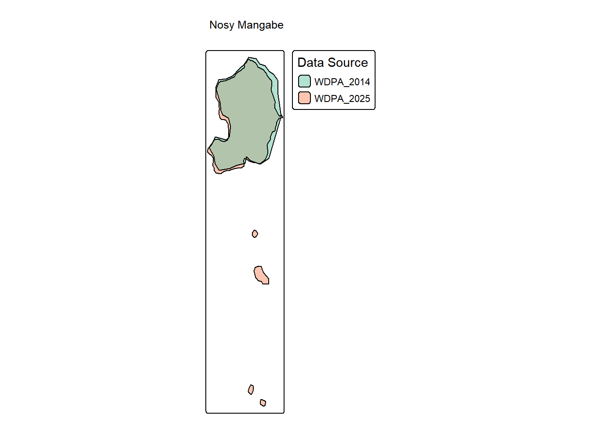
Les polygones pré-2015 semblent toutefois souffrir d’une erreur de projection, aussi on va garder WDPA_2025 comme base pour le tracé pré-2015, en séparant les polygones.
Note de validation : Le décret 2015-775 a modifié les limites ET le statut (RS → PN). La WDPA 2025 contient un multipolygone de 5 composantes (7.29 km² au total). Seul le polygone 5 (5.70 km²) existait avant 2015. Les polygones 1-4 (petits îlots totalisant ~0.28 km²) ont été ajoutés lors de la modification de 2015.
# SAT for pre-2015 boundary (polygon 5 only)sat <-add_modif_sat(sat = sat,data = nosy_mangabe_pre2015,decisions = pa_decisions,wdpa_name_or_id ="Nosy Mangabe",decision_filter =list(year =2015, type_decision_pattern ="modifiant"),source_dataset_id ="WDPA_2025_split",amendment_type ="boundary_modification",valid_from ="1965-12-14",notes ="Pre-2015 geometry: main island only (polygon 5 from WDPA_2025, 5.70 km²). In 2015, 4 small islets were added (polygons 1-4, ~0.28 km²) expanding to 7.29 km² total.")# FAT for status change: RS → PN in 2015fat <-add_modif_fat(fat = fat,decisions = pa_decisions,wdpa_name_or_id ="Nosy Mangabe",decision_filter =list(year =2015, type_decision_pattern ="modifiant"),attributes =list(DESIG ="Réserve Spéciale",DESIG_ENG ="Special Reserve",IUCN_CAT ="IV" ),amendment_type ="status_change",valid_from ="1965-12-14",notes ="Created as RS (Réserve Spéciale) on 1965-12-14 via Décret 65-795. Upgraded to PN (Parc National) via Décret 2015-775 du 28 avril 2015.")# FAT for STATUS_YR correctionfat <-add_modif_fat(fat = fat,decisions = pa_decisions,wdpa_name_or_id ="Nosy Mangabe",decision_filter =list(year =2015, type_decision_pattern ="modifiant"),attributes =list(STATUS_YR ="1965" ),amendment_type ="correction",valid_from ="1965-12-14",notes ="WDPA incorrectly shows STATUS_YR=2015 (date of PN upgrade and boundary expansion). Actual creation was 1965 as RS (Décret 65-795 du 14 décembre 1965).")
9.27 Ranomafana
Goodman et al. (2018) indique pour cette AP: Aspects légaux : Gestionnaire actuel : Madagascar National Parks (MNP) ; Gestion antérieure : aucune ; Création : selon le Décret n° 91-250 du 7 mai 1991 ; Modification de statut : Ranomafana fut décrit comme Site d’Intérêt Biologique. La création du parc national fut proposée conjointement par l’Université de Duke (Etats Unis d’Amérique) et le Service de Protection de la Nature (Direction des Eaux et Forêts, Ministère des Eaux et Forêts) puis réalisée en 1991 selon le Décret n° 91-250 du 7 mai 1991. Le Parc National de Ranomafana intègre les parties reclassées de la Réserve Forestière de Ranomafana et Tsaratanana (Arrêté du 19 mai 1947, 22 730 ha), de la Réserve Forestière d’Ambohimiera 1 (Arrêté du 9 août 1947, 33 950 ha) ainsi que celles d’Ambatovaky et Mahatsinjony (Arrêté n° 2026-DOM du 5 septembre 1950, 5560 ha). En 1997, l’aire protégée subit une modification de limites suivant le Décret n° 97-1042 du 7 août 1997 ; Dernière modification de statut : suivant le Décret n° 97-1042 du 7 août 1997 ; Surface actuelle : 43 550 ha (selon le décret en vigueur).
Une modification de limites a eu lieu en 1997. Malheureusement, nous ne disposons pas de source géométrique antérieure à 1997 pour cette AP.
9.28 Tsaratanàna
Goodman et al. (2018) indique pour cette AP: > Aspects légaux : Gestionnaire actuel : Madagascar National Parks (MNP) ; Gestion antérieure : Direction des Eaux et Forêts (Service de la Protection de la Nature d’Antananarivo ; le Service Provincial des Eaux et Forêts d’Antsiranana et les Cantonnements Forestiers de Bealanana et d’Ambanja) ; Création : selon le Décret du 31 décembre 1927 (Création de la Réserve Naturelle Intégrale n° 4) ; Modification de statut : la Réserve Naturelle Intégrale de Tsaratanàna (49 331 ha) fut établie avec le Décret du 31 décembre 1927, complété par le Décret n° 66-242 du 1 juin 1966. Elle fait partie du Complexe des Aires Protégées d’Ambohimirahavavy- Marivorahona (CAPAM, Décret n° 2015-782 du 28 avril 2015) mis en place en 2015 et intègre dans ses limites, les extensions nord et sud (59 279 ha) définies par la Commission du Système des Aires Protégées de Madagascar en 2008 ; Dernière modification de statut : suivant le Décret n° 2015-782 du 28 avril 2015 ; Surface actuelle : 108 610 ha (selon le décret en vigueur).
Le WDPAID 2306 (Tsaratanana) n’est pas directement associé à une décision dans notre base. Cependant, le Décret 2015-782 concerne le Complexe des Aires Protégées Ambohimirahavavy-Marivorahona (CAPAM), qui inclut la RNI de Tsaratanàna :
Analyse critique : Erreurs dans WDPA 2025 pour Tsaratanàna
Le Décret 2015-782 crée le CAPAM (Complexe des Aires Protégées Ambohimirahavavy-Marivorahona), qui regroupe plusieurs aires protégées de statuts différents : - RNI de Tsaratanàna (Noyau Dur n°1) : 49 331 ha - catégorie UICN Ia - Extensions Nord et Sud de la RNI Tsaratanàna (Noyaux Durs n°2 et n°3) : 59 279 ha - catégorie UICN Ia - Autres aires protégées (RRN COMATSA Nord/Sud, PHP Bemanevika, etc.)
Total pour la RNI + extensions : 108 610 ha (49 331 + 59 279)
Cependant, WDPA 2025 présente plusieurs erreurs pour le WDPAID 2306 : 1. DESIG = "Parc National" : INCORRECT - c’est une Réserve Naturelle Intégrale 2. IUCN_CAT = "II" : INCORRECT - devrait être “Ia” (Strict Nature Reserve) 3. STATUS_YR = 1997 : INCORRECT - aucun décret de 1997 n’existe ; devrait être 2015 (extensions) ou 1927 (création originale) 4. REP_AREA = 1086 km² : Cette superficie correspond bien aux 108 610 ha (RNI + extensions)
La RNI de Tsaratanàna n’a JAMAIS changé de statut. Elle reste une RNI/Ia depuis 1927. Le Décret 2015-782 a uniquement : - Créé le complexe CAPAM englobant plusieurs aires protégées - Ajouté des extensions (59 279 ha) à la RNI originale (49 331 ha) - Maintenu le statut RNI/Ia pour l’ensemble
Corrections FAT nécessaires :
Code
# FAT: Correction du statut (devrait être RNI/Ia, pas PN/II)fat <-add_modif_fat(fat = fat,decisions = pa_decisions,wdpa_name_or_id =2306,manual_decision =list(date_texte =as.Date("2015-04-28"),type_texte ="Décret",num_texte ="2015-782",objet_texte ="Portant création du Complexe des Aires Protégées Ambohimirahavavy-Marivorahona (CAPAM)" ),attributes =list(DESIG ="Réserve Naturelle Intégrale",DESIG_ENG ="Strict Nature Reserve",IUCN_CAT ="Ia" ),amendment_type ="correction",valid_from ="1927-12-31",confidence ="high",verification_method ="legal_text_analysis",verified_by ="project_team",notes ="WDPA 2025 incorrectly classifies Tsaratanàna as PN/II. Decree 2015-782 confirms it remains RNI/Ia (Strict Nature Reserve). The RNI has never changed status since creation in 1927. The 2015 decree created the CAPAM complex and added 59,279 ha extensions (also Ia), bringing total to 108,610 ha.")# FAT: Correction du STATUS_YR (devrait être 2015 pour les extensions, ou 1927 pour la création)fat <-add_modif_fat(fat = fat,decisions = pa_decisions,wdpa_name_or_id =2306,manual_decision =list(date_texte =as.Date("2015-04-28"),type_texte ="Décret",num_texte ="2015-782",objet_texte ="Portant création du Complexe des Aires Protégées Ambohimirahavavy-Marivorahona (CAPAM)" ),attributes =list(STATUS_YR =2015 ),amendment_type ="correction",valid_from ="2015-04-28",confidence ="high",verification_method ="legal_text_analysis",verified_by ="project_team",notes ="WDPA 2025 shows STATUS_YR=1997 with no supporting decree. Setting to 2015 (date of extensions via Decree 2015-782). Original RNI creation was 1927-12-31.")
Warning
Complexité de modélisation : Aires protégées composites
Le cas de Tsaratanàna soulève une question de modélisation. Le CAPAM est un complexe regroupant plusieurs aires protégées distinctes avec leurs propres WDPAID théoriques. Cependant, dans WDPA 2025, seul le WDPAID 2306 apparaît avec la superficie totale de la RNI + extensions (108 610 ha).
Cette situation diffère du cas de Montagne d’Ambre où deux WDPAIDs distincts existaient avant fusion. Ici, les extensions de Tsaratanàna n’ont apparemment jamais eu de WDPAID séparé dans la WDPA.
Pour l’instant, nous documentons les erreurs d’attributs (statut PN/II incorrect) sans modéliser séparément les extensions, car elles ne disposent pas de WDPAID distinct.
9.29 Tsimanampesotse
Goodman et al. (2018) indique pour cette AP: > Aspects légaux : Gestionnaire actuel : Madagascar National Parks (MNP) ; Gestion antérieure : Direction des Eaux et Forêts (Service de la Protection de la Nature d’Antananarivo et Cantonnement Forestier de Betioky) ; Création : selon le Décret du 31 décembre 1927 (Création de la Réserve Naturelle Intégrale n° 10) ; Modification de statut : la création de la Réserve Naturelle Intégrale de Tsimanampetsotsa s’est faite suivant le Décret du 31 décembre 1927 complété par le Décret n° 66-242 du 1 juin 1966. En 2002, l’aire protégée subit un déclassement en parc national avec le Décret n° 2002-797 du 7 août 2002. En 2015, l’aire protégée subit un changement de limites sous le Décret n° 2015-736 du 21 avril 2015. Elle intègre, dans ses limites actuelles l’extension définie par la Commission du Système des Aires Protégées de Madagascar en 2008 et qui inclut le Site d’Intérêt Biologique d’Hatokaliotsy. Ce dernier n’avait aucun statut juridique à l’époque mais a déjà fait l’objet d’un projet de classement en réserve spéciale en 1956 ; Dernière modification de statut : suivant le Décret n° 2015-736 du 21 avril 2015 ; Surface actuelle : 202 525 ha (selon le décret en vigueur).
Les métadonnées confirment que cette aire protégée a été reclassée en Parc National en 2002, puis ses limites ont été modifiées en 2015:
Note de validation : Tsimanampesotse a subi deux modifications successives : changement de statut RNI vers PN en 2002 (Décret 2002-797), puis modification de limites en 2015 (Décret 2015-736) incluant l’extension d’Hatokaliotsy. La WDPA 2025 indique correctement STATUS_YR=1927 (création comme RNI).
Après inspection visuelle des différentes sources disponibles, on retient MNP_2010 comme source des limites avant la modification de 2015.
=== 2307 ===
WDPAID: 2307
Number of representations: 2
Datasets: WDPA_2025, MNP_2010
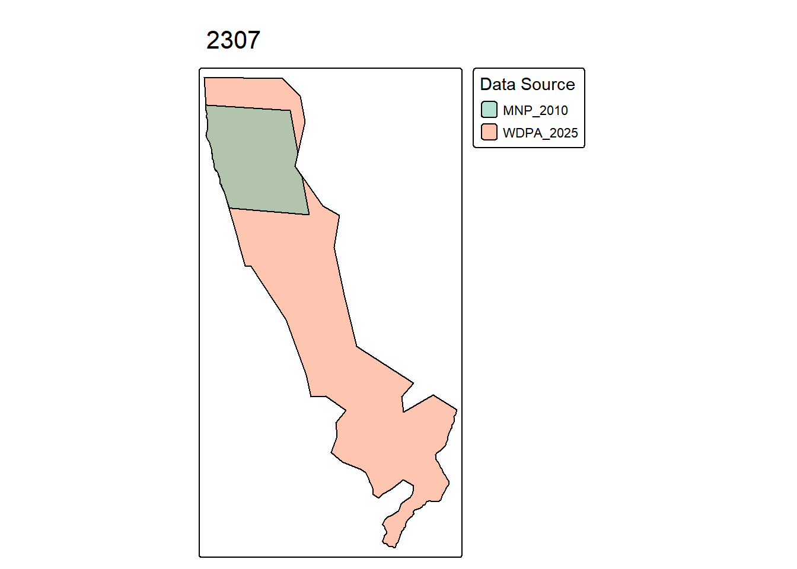
Modifications SAT et FAT :
Code
# SAT for pre-2015 boundarysat <-add_modif_sat(sat = sat,data = all_PAs_conso,decisions = pa_decisions,wdpa_name_or_id ="Tsimanampesotse",decision_filter =list(year =2015, type_decision_pattern ="modifiant"),source_dataset_id ="MNP_2010",amendment_type ="boundary_modification",valid_from ="1927-12-31",notes ="Pre-2015 geometry from MNP_2010. In 2015, boundary expanded to include Hatokaliotsy extension (Décret 2015-736), increasing from ~180 km² to 202.5 km².")# FAT for status change: RNI to PN in 2002fat <-add_modif_fat(fat = fat,decisions = pa_decisions,wdpa_name_or_id ="Tsimanampesotse",decision_filter =list(year =2002,type_decision_pattern ="modifiant",num_texte ="2002-797" ),attributes =list(DESIG ="Réserve Naturelle Intégrale",DESIG_ENG ="Strict Nature Reserve",IUCN_CAT ="Ia" ),amendment_type ="status_change",valid_from ="1927-12-31",notes ="Created as RNI #10 on 1927-12-31. Changed to PN (Parc National) via Décret 2002-797 du 7 août 2002.")
9.30 Zahamena
Goodman et al. (2018) indique pour cette AP: > Aspects légaux : Gestionnaire actuel : Madagascar National Parks (MNP) ; Gestion antérieure : Direction des Eaux et Forêts (Service de la Protection de la Nature d’Antananarivo) ; Création : selon le Décret du 31 décembre 1927 (Création de la Réserve Naturelle Intégrale n° 3) ; Modification de statut : la Réserve Naturelle Intégrale de Zahamena fut créée en 1927 selon le Décret du 31 décembre 1927. Cette aire protégée a subi plusieurs modifications de limites au fil des années – en 1966 (Décret n° 66-242 du 1 juin 1966, 73 160 ha), en 1997 (Décret n° 97-1044 du 7 août 1997) et puis en 2015 (Décret n° 2015-737 du 21 avril 2015). Avec le Décret n° 2015-737 du 21 avril 2015, Zahamena subit aussi un déclassement en parc national ; Dernière modification de statut : suivant le Décret n° 2015-737 du 21 avril 2015 ; Surface actuelle : 64 935 ha (selon le décret en vigueur).
Les métadonnées et sources historiques confirment que cette aire protégée a connu une histoire complexe avec plusieurs modifications de limites et de statut:
Historique détaillé (basé sur sources complémentaires) : - 1927-12-31 : Création comme RNI #3 (Réserve Naturelle Intégrale) - 1966-06 : Décret 66-242 modifie les limites (73,160 ha) - 1997-08 : Décret 97-1044 établit un statut mixte PN + RNI (64,378 ha total) - Parc National (IUCN II) : 42,300 ha - Réserve Naturelle Intégrale (IUCN Ia) : 22,100 ha - Enclave d’Antenina : 350 ha - 2015-04 : Décret 2015-737 unifie en Parc National unique (64,935 ha)
Note de validation : Entre 1997 et 2015, Zahamena était une AP zonée avec deux catégories IUCN distinctes au sein d’une même entité juridique. La WDPA 2025 indique incorrectement STATUS_YR=2015 alors que la création date de 1927. Le décret 2015-737 a unifié le statut en PN unique.
=== 354013 ===
WDPAID: 354013
Number of representations: 4
Datasets: WDPA_2025, ANGAP_2002, SAPM_2010
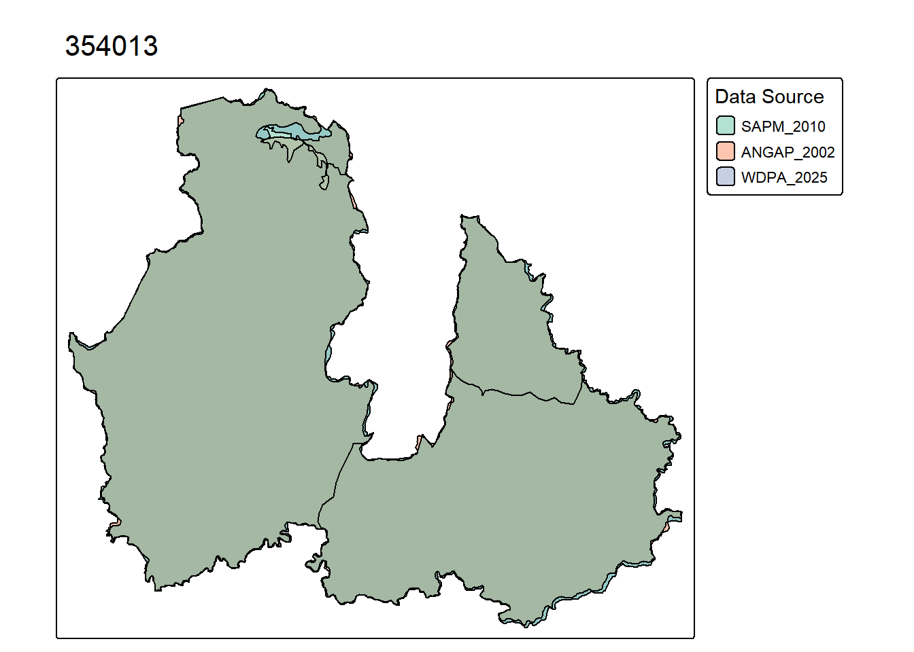
Modélisation dans SAT/FAT : Cette AP a connu deux modifications majeures de limites : en 1997 (réduction de 73,160 à 64,378 ha avec création d’enclave d’Antenina et statut mixte PN+RNI), et en 2015 (expansion à 64,935 ha avec unification en PN). Nous utilisons : - SAPM_2010 pour la géométrie pré-1997 (RNI unique, ~73,160 ha) - ANGAP_2002 pour la géométrie 1997-2015 (PN+RNI avec enclave, 64,378 ha) - WDPA_2025 pour la géométrie post-2015 (PN unifié, 64,935 ha)
Modifications SAT et FAT :
Code
# SAT for 1997 boundary change (pre-1997 geometry from SAPM_2010)sat <-add_modif_sat(sat = sat,data = all_PAs_conso,decisions = pa_decisions,wdpa_name_or_id ="Zahamena",decision_filter =NULL, # Pre-1997, using manual_decisionmanual_decision =list(date_texte =as.Date("1997-08-07"),type_texte ="Décret",num_texte ="97-1044",id_texte =NA,objet_texte ="Modification des limites et établissement du statut mixte PN+RNI de Zahamena" ),source_dataset_id ="SAPM_2010",amendment_type ="boundary_modification",valid_from ="1927-12-31",notes ="Pre-1997 geometry from SAPM_2010: RNI unique status, approximately 73,160 ha. In 1997, Décret 97-1044 reduced area to 64,378 ha, created Antenina enclave (350 ha), and established mixed PN+RNI zoning.")# SAT for 2015 boundary change (1997-2015 geometry from ANGAP_2002)sat <-add_modif_sat(sat = sat,data = all_PAs_conso,decisions = pa_decisions,wdpa_name_or_id ="Zahamena",decision_filter =list(year =2015, type_decision_pattern ="modifiant"),source_dataset_id ="ANGAP_2002",amendment_type ="boundary_modification",valid_from ="1997-08-07",notes ="1997-2015 geometry from ANGAP_2002: mixed PN+RNI status with Antenina enclave, 64,378 ha total. In 2015, Décret 2015-737 expanded to 64,935 ha and unified as PN only.")# FAT for 1997 status change to composite zoningfat <-add_modif_fat(fat = fat,decisions = pa_decisions,wdpa_name_or_id ="Zahamena",decision_filter =NULL, # Pre-1997, using manual_decisionmanual_decision =list(date_texte =as.Date("1997-08-07"),type_texte ="Décret",num_texte ="97-1044",id_texte =NA,objet_texte ="Modification des limites et établissement du statut mixte PN+RNI de Zahamena" ),attributes =list(DESIG ="Réserve Naturelle Intégrale",DESIG_ENG ="Strict Nature Reserve",IUCN_CAT ="Ia" ),amendment_type ="status_change",valid_from ="1927-12-31",notes ="Created as RNI #3 in 1927. In 1997, Décret 97-1044 established mixed status: PN (IUCN II, 42,300 ha) + RNI (IUCN Ia, 22,100 ha) with Antenina enclave (350 ha). This composite zoning lasted until 2015.")# FAT for 2015 status unificationfat <-add_modif_fat(fat = fat,decisions = pa_decisions,wdpa_name_or_id ="Zahamena",decision_filter =list(year =2015, type_decision_pattern ="modifiant"),attributes =list(DESIG ="Parc National + Réserve Naturelle Intégrale",DESIG_ENG ="National Park + Strict Nature Reserve",IUCN_CAT ="II+Ia" ),amendment_type ="status_change",valid_from ="1997-08-07",notes ="Mixed PN+RNI status from 1997-2015 per Décret 97-1044: PN (42,300 ha, IUCN II) + RNI (22,100 ha, IUCN Ia) with Antenina enclave (350 ha). Unified to PN only in 2015 via Décret 2015-737.")# FAT for STATUS_YR correctionfat <-add_modif_fat(fat = fat,decisions = pa_decisions,wdpa_name_or_id ="Zahamena",decision_filter =list(year =2015, type_decision_pattern ="modifiant"),attributes =list(STATUS_YR ="1927" ),amendment_type ="correction",valid_from ="1927-12-31",notes ="WDPA incorrectly shows STATUS_YR=2015 (date of status unification to PN). Actual creation was 1927 as RNI #3 (Décret du 31 décembre 1927).")
10 Save Curated Tables
The manual curation process has generated two key tables:
SAT (Site Attribute Table): Records all corrections to WDPA attributes (e.g., designation, IUCN category, status year)
FAT (Feature Attribute Table): Provides detailed feature-level attribute changes with legal documentation and temporal validity
These curated tables will be used in subsequent analyses to produce corrected PA datasets that reflect accurate historical information for Madagascar’s protected areas.
Code
# Save the Site Attribute Tablewrite_rds(sat, "data/sat_curated.rds")# Save the Feature Attribute Tablewrite_rds(fat, "data/fat_curated.rds")# Summary of curation resultscat("Curation complete!\n")
Curation complete!
Code
cat("SAT entries:", nrow(sat), "\n")
SAT entries: 17
Code
cat("FAT entries:", nrow(fat), "\n")
FAT entries: 31
Alonso, Leeanne E., and Thomas S. Schulenberg. 2002. Une évaluation biologique de la Réserve naturelle intégrale d’Ankarafantsika, Madagascar =: A biological assessment of the Réserve naturelle intégrale d’Ankarafantsika, Madagascar. Washington, D.C: Conservation International.
Goodman, Steven M., Marie Jeanne Raherilalao, Sébastien Wohlhauser, Jean Clarck N. Rabenandrasana, Herivololona M. Rakotondratsimba, Fanja Andriamialisoa, and Malalarisoa Razafimpahanana. 2018. Les Aires Protégées Terrestres de Madagascar: Leur Histoire, Description Et Biote. Association Vahatra.
Sussman, Robert W., Alison F. Richard, Joelisoa Ratsirarson, Michelle L. Sauther, Diane K. Brockman, Lisa Gould, Richard Lawler, and Frank P. Cuozzo. 2012. “Beza Mahafaly Special Reserve: Long-Term Research on Lemurs in Southwestern Madagascar.” In Long-Term Field Studies of Primates, edited by Peter M. Kappeler and David P. Watts, 45–66. Berlin, Heidelberg: Springer. https://doi.org/10.1007/978-3-642-22514-7_3.